ECON 2316 • Microeconomic Theory • Chapter 8
Costs of Production
A UAW wage shock hits the gigafactory — what does the cost-minimizing input mix look like, and what does it cost?
Dr. Richeng Piao
Department of Economics
Northeastern University — 100 min
Learning Objectives
By the end of class today, you will be able to…
8.1
Set up the firm's cost-minimization Lagrangian and state the tangency condition \(\text{MRTS}_{LK} = w/r\) and the equimarginal principle \(MP_L/w = MP_K/r\). (Bloom L2)
8.2
Solve for the cost-minimizing input bundle \((K^*, L^*)\), total cost \(c^*\), and conditional input demands at the gigafactory calibration. (Bloom L3)
8.3
Predict how \(L^*, K^*,\) and \(c^*\) respond to a wage shock using Cobb-Douglas comparative statics. (Bloom L4)
8.4
Apply the envelope theorem to recover marginal cost \(MC = \mu\) and Shephard's lemma \(\partial c/\partial w = L^*\) from the cost function. (Bloom L4)
8.5
Distinguish short-run and long-run cost curves, and derive the LR cost curve as the lower envelope of SR cost curves. (Bloom L5)
From the Production Function to the Cost Function
Ch 7 — What's feasible?
- Production technology \(Q = f(K, L)\)
- Marginal products \(MP_K, MP_L\)
- MRTS \(= MP_L/MP_K\) (slope of isoquant)
- Gigafactory: \(Q = 8 K^{0.4} L^{0.6}\)
Ch 8 — What's cheapest?
- Cost-min problem: \(\min\, wL + rK\) s.t. \(f \geq q\)
- Cost function \(c(w, r, q)\)
- Conditional input demand \(K^*, L^*\)
- Marginal cost \(MC = \partial c/\partial q\)
The cost-min problem is the producer-side analog of Ch 6's expenditure minimization. Same Lagrangian, same envelope theorem, same Shephard's lemma — just swap utility for production, prices for input prices, and Hicksian for conditional input demand. The duality machinery is identical.
December 2023 — A Wage Shock Hits the Gigafactory
The United Auto Workers won historic contracts at Stellantis, Ford, and GM, lifting top-tier production wages to \$42/hr base by 2027.
Tesla Gigafactory Nevada is non-union — but its labor market isn't. Within weeks, HR pushed base hourly pay up ~10%; fully loaded labor cost rose from \(w \approx \$45\) to \(w \approx \$50\)/hr.
Output target unchanged at \(Q = 32\) GWh. Capital stock fixed in the short run. The thing the plant can adjust is the input mix.
How much should the mix change? In which direction? At what cost?
+25%
UAW top-tier pay rise on signing (Stellantis, Ford, GM — Oct 2023)
+10%
Tesla Nevada hourly pay rise (Jan 2024 spillover)
\$50
Fully-loaded \(w\)/hr at the gigafactory (BLS ECEC Dec 2025)
0.13
Capital rental rate \(r\) (BEA + Damodaran 2026, $/yr)
Before isocost — what counts as a cost?
Costs That Matter
Not every cost should change your decision — some do.
Setup — A Year-One Proposal
Suppose you’re considering opening a restaurant / burger shop. In the proposal you build, you’ve estimated both costs and revenue for the first year:
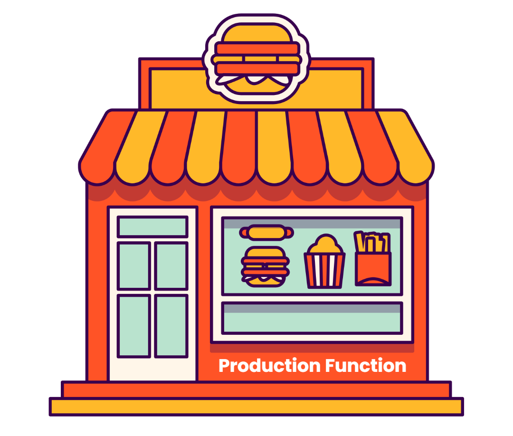
Proposal
Restaurant & Burger Shop — Year 1
| Item | Projected |
|---|---|
| Revenue (40K orders × \$25) | \$1,000,000 |
| Rent (Boston storefront, 12 mo) | \$120,000 |
| Staff wages (4 line cooks) | \$220,000 |
| Buns, patties, cheese, potatoes | \$280,000 |
| Utilities + internet + POS | \$48,000 |
| Equipment + insurance + tax | \$132,000 |
| Total explicit costs | \$800,000 |
| Projected acct. profit | \$200,000 |
Looks good … but is it really?
Costs That Matter — Opportunity Costs
Explicit costs
Out-of-pocket payments. Show up on a financial statement.
Wages, rent, ingredients, equipment…
Implicit costs
Opportunity cost of resources you already own — the forgone next-best alternative.
Owner’s salary elsewhere, interest on capital…
Economic Costs = Explicit + Implicit costs
Start-up: Restaurant / Burger Shop
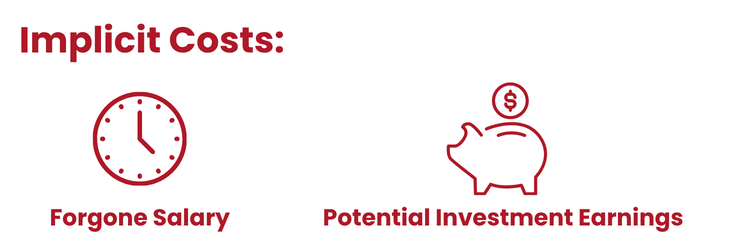
Accounting Profit
Accounting profit = Total revenue − Explicit costs
- TR = P × Q = \$25 × 40,000 = \$1,000,000
- Total Explicit Costs = \$800,000
- Accounting profit = \$1,000,000 − \$800,000 = \$200,000
Start-up: Restaurant / Burger Shop
Explicit Costs: \$800,000
Normal Rate of Return
Normal profit: occurs when economic profit = 0 — the firm earns exactly the normal rate of return on its inputs.
💡
π = +\$200K
- TR = \$1,200K
- Explicit = \$800K
- Implicit = \$200K
Economic Profit > 0
New entrants flock in
Opp. cost = \$200K
π = \$0
- TR = \$1,000K
- Explicit = \$800K
- Implicit = \$200K
Economic Profit = 0
Indifferent — stay or go
😴
π = −\$200K
- TR = \$800K
- Explicit = \$800K
- Implicit = \$200K
Economic Profit < 0
Owners exit the market
Press SPACE to reveal each scenario.
Macro to Micro — Profits Drive Entry & Exit
Whether economic profit shows up at all depends on the overall economy — demand, input prices, interest rates, taxes, the wage you could earn elsewhere. Macro conditions shape every micro decision.
Positive economic profit
A firm is earning more than the next-best use of its time + capital.
New sellers enter — chasing the same opportunity.
Result: supply ↑, price ↓, profits shrink toward zero.
Negative economic profit
A firm is earning less than the next-best use — bleeding value.
Owners quit — leaving for higher-return alternatives.
Result: supply ↓, price ↑, profits drift back toward zero.
Long-run equilibrium: economic profit is driven to zero. Surviving firms earn a normal rate of return, no more. (We’ll formalize entry & exit in Ch 9 — Profit Maximization.)
The flip side — what to ignore
Costs That Do Not Matter
Sunk costs are gone — they should never enter the next decision.
Decisions to Consider — For the Upcoming Year
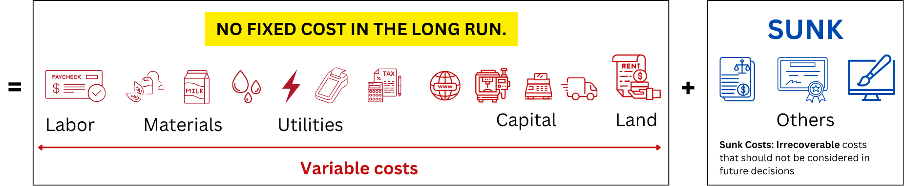
Long-run: every input is variable — only sunk costs stay behind. Short-run closures (CLOSED sign) reopen; long-run closures (Walgreens PERMANENTLY CLOSED) write off the sunk build-out.
Application — Walgreens Walks Away From Sunk Costs
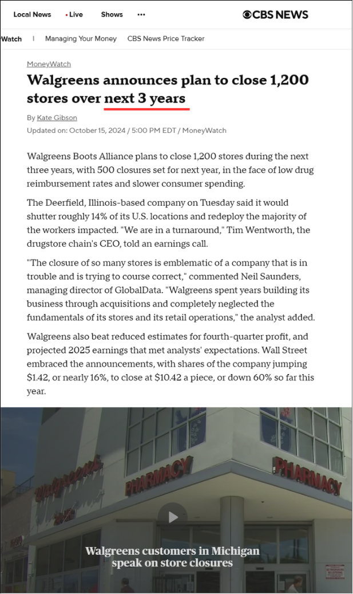
PERMANENTLY CLOSED

SUNK BUILD-OUT
~1,200
store closures
over 3 years (Oct 2024)
\$M / store
in fixtures, refrigeration,
leasehold — all sunk
Variable cost > revenue
drove the call — not
the prior build-out
The AI Cost Pivot — Training vs Inference
Frontier AI labs face a textbook fixed-vs-variable cost split. Once a model is trained, the training spend is sunk; the per-query inference spend is what drives every future decision.
Training
Fixed / Sunk cost. Bursty — paid once, up front.
\$78M (GPT‑4)
\$191M (Gemini Ultra)
Source: Epoch AI / Stanford AI Index 2024
Inference
Variable / Recurring. 24/7 utility — paid every query.
60–80% of
total lifetime system cost
Source: NVIDIA earnings, hyperscaler 10-K filings
Once Gemini Ultra finished training, that \$191M became sunk. The decision facing Google every day after: do we serve queries at a positive margin over INFERENCE cost? The training cost is irrelevant to that call.
The Sunk Cost Fallacy
This actually happened (July 2026). Moonshot AI released Kimi K3 — an open-source model that topped the coding leaderboards over closed frontier models within hours, sending rival AI-lab valuations down. The huge sums proprietary labs spent training are now sunk: the rational forward choice turns on future cost, not the money already gone.
Read the newsISOCOST
where input prices come from · same-cost input combinations · the firm's budget line
Where Input Prices Come From
To pick the cost-minimizing recipe today, the firm needs two market-set prices: the wage (\(w\)) for labor and the rental rate (\(r\)) for capital.
Labor cost = wage

Construction-laborer market in Boston, MA: \(w \approx \$28\text{–}32\)/hour for entry-level; \(\$31.95\)/hour at Pioneer Mgmt.
Capital cost = rental rate

Equipment-rental market: \(r \approx \$106\)/day for a 19′ scissor lift; \(\$1{,}207\)/week for a 9K telehandler.
The point. The firm doesn't choose \(w\) or \(r\) — markets do. The firm chooses how much \(K\) and \(L\) to use given those prices. Today we combine these market-set input prices with the technology-set marginal products to find the cost-minimizing recipe (\(\text{MRTS}_{LK} = w/r\)).
The Firm's Cost-Minimization Problem
An isocost line shows all input combinations that yield the same cost — the producer-side analog of the consumer's budget line.
\[ C \;=\; R\,K \;+\; W\,L \]
\(C\) = total cost · \(R\) = rental rate of capital · \(W\) = wage rate
Input prices
Wage \(W = \$10\) · Rental \(R = \$20\)
Three bundles at \(C = \$50\)
\((L,K) = (5,0),\;(3,1),\;(1,2)\) — same cost, different recipes.
Rearrange to express capital as a function of labor at fixed cost:
\[ K \;=\; \frac{C}{R} \;-\; \frac{W}{R}\,L \]
slope-intercept form: \(K\)-intercept \(=C/R\), slope \(=-W/R\). Higher \(C\) shifts the line outward in parallel.
The Firm's Cost-Minimization Problem
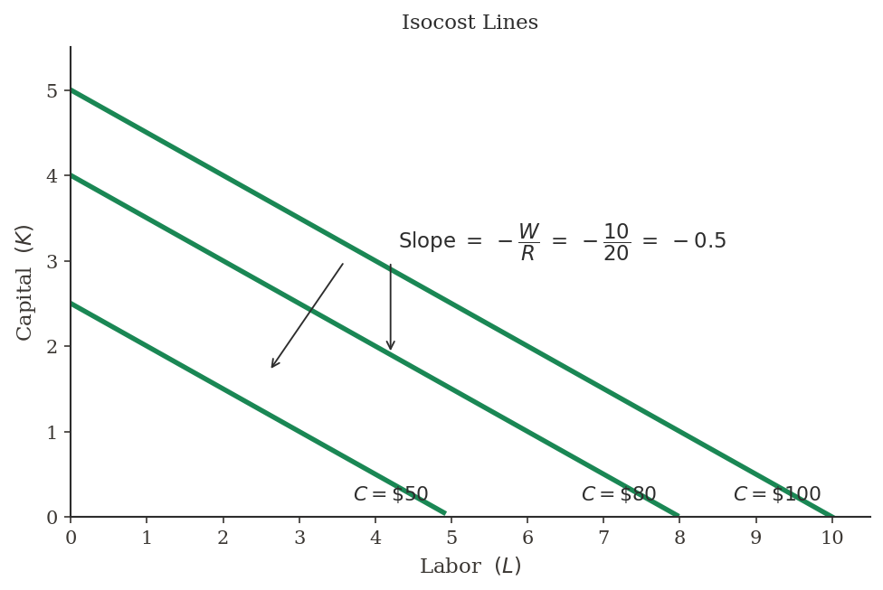
All same slope
slope \(= -W/R = -0.5\)
Parallel & outward
higher \(C\) ⇒ line shifts outward
Pick the lowest
that still hits \(f(K,L)=q\)
Three isocost lines for \(W=\$10\), \(R=\$20\): same slope, different \(C\). The firm wants the lowest isocost that still touches the production isoquant — that point is the cost-minimizing input mix.
§8.2 The Cost-Minimization Problem
isocost lines · tangency · equimarginal principle
Identifying Minimum Cost — Combining Isoquants & Isocost Lines
Remember, the firm's problem is one of constrained minimization.
- Firms minimize costs subject to a given amount of production.
- Cost minimization is achieved by adjusting the ratio of capital to labor.
Graphically, cost minimization requires tangency between the isoquant associated with the chosen level of production, and the lowest-cost isocost line.
Isoquant fixes what the firm must produce; the isocost line fixes at what cost. Tangency picks the cheapest feasible bundle.
Identifying Minimum Cost — A Graphical Approach
A Graphical Approach
- Isocost lines represent how much each set of inputs costs.
- Isoquants represent the production function and show the levels of inputs necessary to achieve a given level of output.
- The firm's objective is to produce \(\bar Q\) at the lowest cost possible.
- The lowest cost is on the isocost line closest to the origin.
- This occurs where the isocost line is tangent to the isoquant — at point \(B\).
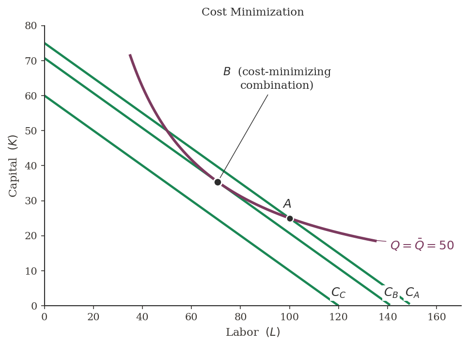
\(C_C\) sits below the isoquant — cheap, but doesn't produce enough output. \(C_A\) is feasible at point \(A\) but more expensive than necessary. \(C_B\) is the lowest isocost that still touches the isoquant — the tangency point \(B\) is the cost-minimizing combination.
Application — The Apple-1 at the Byte Shop, 1976
A month after founding the company, Jobs and Wozniak demoed the “Apple Computer A” at the Homebrew Computer Club. Paul Terrell of The Byte Shop ordered 50 fully assembled units at \$500 each, cash on delivery.
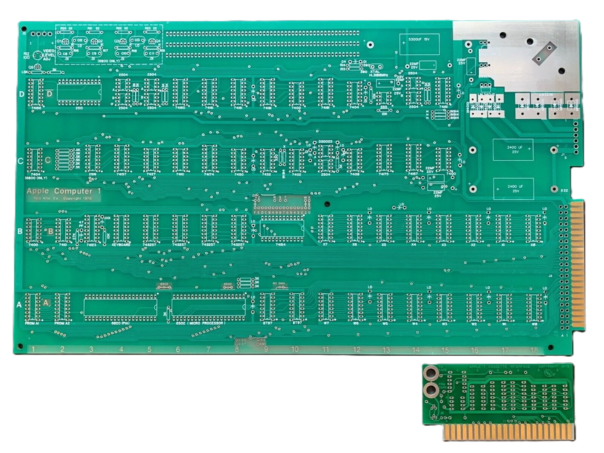

INPUTS \(K\)
PCB + chips

OUTPUT \(q = 50\)
TR = \$500 × 50 = \$25,000

Homebrew Computer Club — July 1976. Photo: Josh Martin
The production target
\(q = 50\) Apple-1 boards — fixed by the order. The question: how to deliver 50 boards at the lowest total cost?
The input choice
\(L\) = Wozniak's hand-soldering hours. \(K\) = workbench tools, IC tester, PCB substrate. The recipe was extremely labor-intensive.
The textbook problem. Pick \((K, L)\) on the \(q = 50\) isoquant that minimizes \(W L + R K\). Geometrically, slide the isocost line down until it just touches the isoquant — that tangency point is the cost-min recipe.
Wozniak hand-soldered ~5 boards/week. Cost-min picks the labor-vs-capital recipe that hits the 50-board order at the lowest total spend.
Numerical Example — Same Isoquant, Different Input Prices
Target the same isoquant \(\bar Q = 50\) with Cobb-Douglas \(Q = \sqrt{K\cdot L}\) (so \(K L = 2{,}500\)). Closed-form cost-min:
\( L^* = 50\,\sqrt{R/W}, \quad K^* = 50\,\sqrt{W/R}, \quad C^* = 100\,\sqrt{W\cdot R} \)
Where \(L^*\) and \(K^*\) come from — 4 steps
1 · Tangency
\(MRTS = \dfrac{MP_L}{MP_K} = \dfrac{K}{L} = \dfrac{W}{R}\)
⇒ \(K = (W/R)\,L\)
2 · Stay on the isoquant
\(\sqrt{KL} = 50\)
⇒ \(KL = 2{,}500\)
3 · Substitute 1 into 2
\((W/R)L^2 = 2{,}500\)
⇒ \(L^* = 50\sqrt{R/W},\; K^* = 50\sqrt{W/R}\)
4 · Add up the bill
\(C^* = WL^* + RK^*\)
⇒ \(C^* = 100\sqrt{WR}\)
Step 1 is the tangency condition — we prove it formally a few slides ahead (“Identifying Minimum Cost — The Tangency Math”). For now: at the optimum the isocost slope \(-W/R\) equals the isoquant slope \(-MRTS\).
Case A — baseline
\(W = \$10\), \(R = \$20\)
slope \(-W/R = -0.5\); \(K/L = 0.5\)
- \(L^* = 50\sqrt{2} \approx \mathbf{70.7}\)
- \(K^* = 50/\sqrt{2} \approx \mathbf{35.4}\)
- \(C^* = 10\cdot 70.7 + 20\cdot 35.4 = \mathbf{\$1{,}414}\)
Case B — wage doubles
\(W = \$20\), \(R = \$20\)
slope \(-W/R = -1\); \(K/L = 1\)
- \(L^* = \mathbf{50}\)
- \(K^* = \mathbf{50}\)
- \(C^* = 20\cdot 50 + 20\cdot 50 = \mathbf{\$2{,}000}\)
Case C — cheap labor
\(W = \$5\), \(R = \$20\)
slope \(-W/R = -0.25\); \(K/L = 0.25\)
- \(L^* = \mathbf{100}\)
- \(K^* = \mathbf{25}\)
- \(C^* = 5\cdot 100 + 20\cdot 25 = \mathbf{\$1{,}000}\)
Takeaway. Same output (\(\bar Q = 50\)), different input prices ⇒ different cost-min recipe AND different total cost. As the wage rises (C→A→B), the firm shifts toward more capital, less labor, and total cost climbs from \(\$1{,}000 \to \$1{,}414 \to \$2{,}000\). The substitution can cushion the wage shock — but cannot fully absorb it.
Input Price Changes — Rotating the Isocost Line
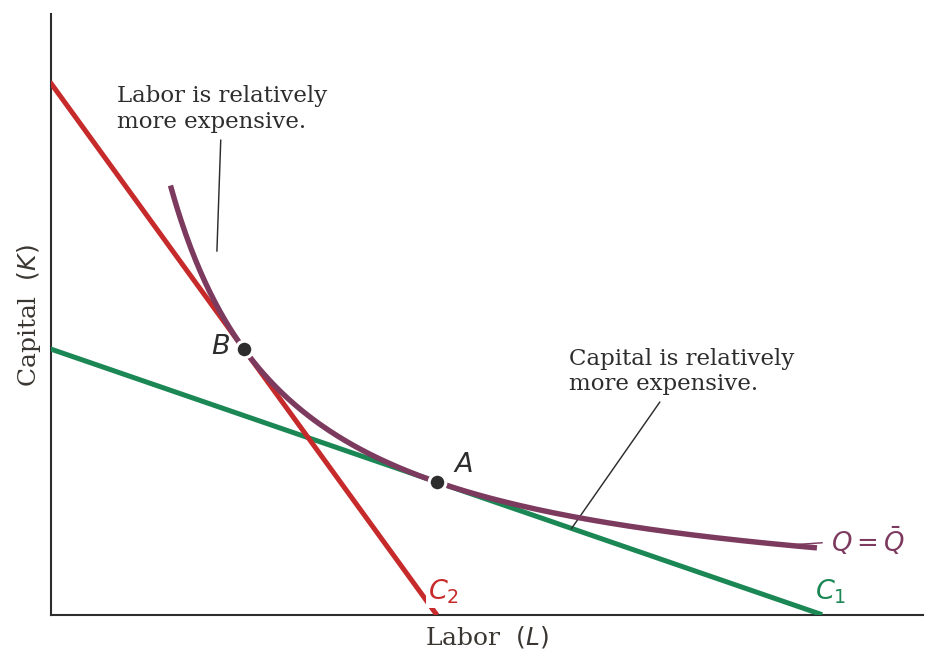
Capital is relatively more expensive
\(R\) rises (or \(W\) falls) ⇒ isocost line gets flatter (slope \(-W/R\) shrinks). Tangency slides DOWN-RIGHT to point \(A\) — more labor, less capital.
Labor is relatively more expensive
\(W\) rises (or \(R\) falls) ⇒ isocost line gets steeper (slope \(-W/R\) grows). Tangency slides UP-LEFT to point \(B\) — more capital, less labor.
Same output \(\bar Q\), same isoquant. Only the price ratio changes — and the cost-min recipe rotates around the isoquant.
Take-home. The cost-min input mix is a response to prices. As the wage rises, the firm substitutes away from labor and toward capital — sliding along the same isoquant to a new tangency. Exactly the wage-shock comparative statics the UAW story (§8.1) sets up: \(W \uparrow \Rightarrow K^*/L^* \uparrow\).
Production Technologies — labor-intensive vs. capital-intensive
LABOR-INTENSIVE
Heavy labor inputs
Pizza shop, salons, custom tailoring
MIXED — 1 : 1
Balanced labor & capital
Rideshare, dentistry, contracting
CAPITAL-INTENSIVE
Heavy capital inputs
Robotic warehouses, semiconductor fabs, oil refineries
Same final good can be produced in many ways. The production technology a firm picks — how much labor vs. how much capital — depends on input prices and the available recipe.
Apple in 1976: pure labor-intensive (Jobs & Wozniak in a garage). Apple in 2026: heavily capital-intensive (TSMC fabs assemble the chips). Same firm, very different K/L mix.
Identifying Minimum Cost — The Tangency Math
Mathematically, tangency occurs where the slope of the isocost line equals the slope of the isoquant — and the isoquant’s slope is the MRTS:
\[ -\frac{W}{R} \;=\; -\frac{MP_L}{MP_K} \;\;\longrightarrow\;\; \text{MRTS}_{LK} \;=\; \frac{MP_L}{MP_K} \;=\; \frac{W}{R} \]
Rearranged — the equimarginal principle:
\[ \frac{MP_L}{W} \;=\; \frac{MP_K}{R} \]
Costs are minimized when the marginal product per dollar spent is equalized across inputs.
Intuition. If \(MP_L/W > MP_K/R\), a dollar spent on labor buys more output than a dollar spent on capital — so shift toward labor. Stop only when no further re-mix saves money. The next slide works both directions, case by case.
Same logic as Ch 5's consumer equimarginal principle (\(MU_1/p_1 = MU_2/p_2\)): the producer-side dual swaps marginal utilities → marginal products and good prices → input prices.
Input Price Changes — When the Firm Should Rebalance
Cost-minimizing condition:
Costs are minimized when \(\;\dfrac{MP_K}{R} = \dfrac{MP_L}{W}\;\) (marginal product per dollar equalized).
If a price changes and the equality breaks, the firm should re-mix inputs:
Case 1
\( \dfrac{MP_K}{R} \;>\; \dfrac{MP_L}{W} \)
The marginal product per dollar spent on capital is higher than on labor.
⇒ More capital and less labor should be used.
Case 2
\( \dfrac{MP_K}{R} \;<\; \dfrac{MP_L}{W} \)
The marginal product per dollar spent on labor is higher than on capital.
⇒ More labor and less capital should be used.
Concrete example coming up in §8.4.3: UAW pushes \(W\) up, so \(MP_L/W\) falls → Case 1 → firm shifts toward capital. (Amazon warehouses doing exactly this in real time.)
Cost-Minimization — The Problem
A firm with technology \(f(K, L)\) faces market input prices \(w\) (wage) and \(r\) (rental rate). It must deliver at least \(q\) units of output. Choose the input bundle that drives total spending to its lowest value:
\[ \min_{K, L \,\geq\, 0} \;\; w L + r K \quad \text{subject to} \quad f(K, L) \geq q. \]
Why \(\geq\), not \(=\)?
Producing extra output requires extra inputs, which costs money. So at the optimum the constraint binds: \(f(K^*, L^*) = q\). We can write \(=\) once we know the optimum sits on the boundary.
Why not min unconstrained?
Unconstrained min of \(wL + rK\) is \(K = L = 0\) — trivial. The output requirement is what makes the problem interesting. \(q\) is handed down from elsewhere (Ch 9 will endogenize it).
Cobb-Douglas Form — Tangency & Equimarginal in Closed Form
Tangency — geometric
For \(f(K, L) = A K^\alpha L^\beta\):
\(MP_L = \beta\dfrac{Q}{L}, \quad MP_K = \alpha\dfrac{Q}{K}\)
\(\text{MRTS}_{LK} = \dfrac{MP_L}{MP_K} = \dfrac{\beta}{\alpha}\cdot\dfrac{K}{L}\)
Set \(\text{MRTS} = \dfrac{w}{r}\) and solve:
\(\boxed{\;\dfrac{K^*}{L^*} = \dfrac{\alpha}{\beta}\cdot\dfrac{w}{r}\;}\)
Equimarginal — algebraic
Same condition, rewritten as "output per dollar equal across inputs":
\(\dfrac{MP_L}{w} = \dfrac{MP_K}{r}\)
\(\dfrac{\beta\,Q/L}{w} = \dfrac{\alpha\,Q/K}{r}\)
Cancel \(Q\), cross-multiply:
\(\boxed{\;\beta\, r\, K^* = \alpha\, w\, L^*\;}\)
Same as the boxed result on the left — just rearranged.
Gigafactory plug-in
\(\alpha = 0.4,\;\beta = 0.6,\;A = 8\), \(w = 0.10,\;r = 0.13\)
\(\dfrac{K^*}{L^*} = \dfrac{0.4}{0.6}\cdot\dfrac{0.10}{0.13} = \mathbf{0.513}\)
Substitute \(K^* = 0.513\,L^*\) into \(8 K^{0.4} L^{0.6} = 32\):
\(8 \cdot 0.513^{0.4} \cdot L^* = 32 \;\Rightarrow\; L^* = \dfrac{32}{6.128} = \mathbf{5.22}\)
\(L^* = \mathbf{5.22}\) thousand workers
\(K^* = 0.513 \cdot 5.22 = \mathbf{2.68}\) B\$
Exact match with Walkthrough 8.1 ✓
For Cobb-Douglas, the cost-min input ratio is purely structural: just the exponent ratio \(\alpha/\beta\) times the price ratio \(w/r\). The output level \(q\) just rescales \((K, L)\) along this ray.
§8.3 The Lagrangian & Tangency
FOCs · the multiplier \(\mu\) · the cost-min interior solution
Setting Up the Lagrangian
Attach a multiplier \(\mu\) to the binding output constraint \(q - f(K, L) = 0\):
\[ \mathcal{L}(K, L, \mu) \;=\; w L + r K + \mu \bigl(q - f(K, L)\bigr) \]
First-order conditions (at an interior optimum):
\(\partial \mathcal{L}/\partial L = 0\)
\(w = \mu \cdot MP_L\)
\(\partial \mathcal{L}/\partial K = 0\)
\(r = \mu \cdot MP_K\)
\(\partial \mathcal{L}/\partial \mu = 0\)
\(f(K, L) = q\)
Divide the first two: \(\;w/r = MP_L/MP_K = \text{MRTS}_{LK}\) — the tangency. The third pins the solution to the isoquant.
What is \(\mu\)? The shadow value of the output constraint — the marginal cost of an extra unit of output. In §8.5 we'll prove (via the envelope theorem) that \(\mu = \partial c/\partial q = MC\). The Lagrange multiplier is marginal cost.
Tangency at the Gigafactory — \(Q = 32\) GWh
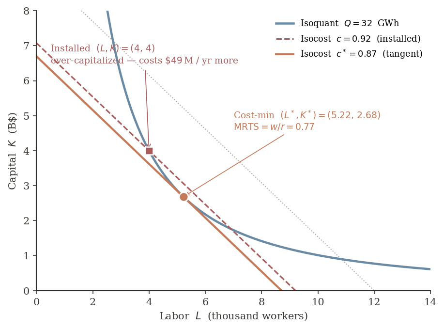
Cost-min bundle:
\((L^*, K^*) = (5.22, \; 2.68)\)
\(c^* = \$0.87\) B/yr
The installed bundle isn't cost-min!
Ch 7's gigafactory anchor \((K, L) = (4, 4)\) sits on the higher dashed isocost: \(c = 0.92\) B/yr — \(\$49\) M / yr above the optimum.
The plant is over-capitalized: it runs 49% more capital and 23% less labor than the cost-min levels at today's input prices.
Why the Firm's Bundle Isn't Always Cost-Minimizing
Capital is sunk
The cell-stacking lines, drying ovens, and assembly robots are bolted to the floor. They depreciate over 7–15 years. You can't — without huge write-downs — rip them out when prices change.
Bundles reflect past prices
The installed (K, L) reflects the prices that prevailed when the bundle was chosen. The 2018 capital-labor ratio was set by 2018 prices — not by 2024 prices.
Cost minimization is a target, not a description. The chapter's machinery tells you what the firm should do at current prices. The firm's actual bundle may differ by a substantial amount — and the wedge between them is real economic waste, gradually closed as old equipment depreciates and new investment can be re-optimized.
Forward-pointer: §8.7 (SR vs LR) will make this concrete — the gigafactory sits on its SR cost curve, which lies above the LR envelope.
§8.4 The Cost Function
Cobb-Douglas closed form · conditional input demands · comparative statics
Cost Function & Conditional Input Demands
Cost function
\[ c(w, r, q) \;=\; \min_{K, L} \,(w L + r K) \;\; \text{s.t.} \;\; f(K, L) = q \]
The minimum total spending required to produce \(q\) units of output at input prices \(w, r\). Function of three arguments: two prices and a quantity.
Conditional input demands
\[ L^*(w, r, q), \quad K^*(w, r, q) \]
The cost-minimizing input bundle conditional on producing exactly \(q\). Solves the FOCs. Distinguishes from unconditional input demand (Ch 9) where \(q\) is also a choice variable.
Three properties to know. The cost function is (i) non-decreasing in each price, (ii) non-decreasing in \(q\), and (iii) concave in each input price — doubling a price less-than-doubles cost because the firm substitutes away. We'll prove (iii) graphically in §8.6 (Shephard).
The Cobb-Douglas Cost Function — Where It Comes From
Start from the cost-min problem for \(f(K, L) = A K^{\alpha} L^{\beta}\): minimize \(wL + rK\) subject to \(A K^{\alpha} L^{\beta} = q\). Four steps get you the whole cost function.
Step 1 — Tangency
With \(MP_L = \beta q/L\) and \(MP_K = \alpha q/K\):
\(\dfrac{MP_L}{MP_K} = \dfrac{\beta K}{\alpha L} = \dfrac{w}{r} \;\Longrightarrow\; K = \dfrac{\alpha}{\beta}\dfrac{w}{r}\,L\)
Step 2 — Impose the output target
Substitute that \(K\) into \(A K^{\alpha} L^{\beta} = q\):
\(A\left(\dfrac{\alpha w}{\beta r}\right)^{\!\alpha} L^{\alpha+\beta} = q\)
Step 3 — Solve for the input demands
Only \(L\) is left, so solve — then back out \(K^*\) from Step 1:
\(L^* = \left(\dfrac{q}{A}\right)^{\!\frac{1}{\alpha+\beta}}\!\left(\dfrac{\beta r}{\alpha w}\right)^{\!\frac{\alpha}{\alpha+\beta}}\)
Step 4 — Add up the bill
Plug \(L^*, K^*\) into \(c = wL^* + rK^*\) and collect terms:
both pieces share \(\left(\tfrac{q}{A}\right)^{\frac{1}{\alpha+\beta}} w^{\frac{\beta}{\alpha+\beta}} r^{\frac{\alpha}{\alpha+\beta}}\)
\(c(w, r, q) = (\alpha + \beta)\left(\dfrac{q}{A}\right)^{\!1/(\alpha+\beta)} \!\left(\dfrac{w}{\beta}\right)^{\!\beta/(\alpha+\beta)} \!\left(\dfrac{r}{\alpha}\right)^{\!\alpha/(\alpha+\beta)}\)
Under CRS (\(\alpha+\beta=1\)) this collapses to \(c(q) = \left(\tfrac{w}{\beta}\right)^{\beta}\left(\tfrac{r}{\alpha}\right)^{\alpha}\tfrac{q}{A}\) — linear in \(q\). Walkthrough 8.1 runs the gigafactory numbers through exactly these four steps.
What this formula actually tells you (3 ideas):
1. Returns to scale → cost shape
CRS (\(\alpha+\beta=1\)): cost is linear in \(q\).
DRS: cost rises faster than \(q\) (convex).
IRS: cost rises slower (concave).
2. Cost shares = exponents
\(\dfrac{wL^*}{c} = \beta,\;\dfrac{rK^*}{c} = \alpha\). Gigafactory labor share = 0.6 = \(\beta\), capital share = 0.4 = \(\alpha\) — regardless of prices.
3. Only \(w/r\) matters
Double both prices ⇒ cost doubles, but the input mix \((K^*, L^*)\) is unchanged. Only the ratio \(w/r\) drives the mix.
Walkthrough 8.1 — Cost-Min at the Gigafactory
Problem. Gigafactory technology \(Q = 8 K^{0.4} L^{0.6}\), locked prices \(w = 0.10\) B\$/(K-worker·yr), \(r = 0.13\)/yr. Output target \(q = 32\) GWh/yr. Find \((K^*, L^*)\), \(c^*\), and verify the cost shares.
(a) Tangency
\(\dfrac{w}{r} = \dfrac{\beta}{\alpha} \cdot \dfrac{K}{L} \;\Rightarrow\; \dfrac{K^*}{L^*} = \dfrac{\alpha w}{\beta r} = \dfrac{0.4 \cdot 0.10}{0.6 \cdot 0.13} = \mathbf{0.5128}\)
(b) Output constraint. Substitute \(K^* = 0.5128\, L^*\):
\(8 (0.5128 L^*)^{0.4} (L^*)^{0.6} = 32 \;\Rightarrow\; 8 \cdot 0.7656 \cdot L^* = 32\)
\(\;\Rightarrow\; \mathbf{L^* = 5.224}\) thousand workers, \(\mathbf{K^* = 2.679}\) B\$
(c) Total cost & cost shares
\(c^* = wL^* + rK^* = 0.1 \cdot 5.224 + 0.13 \cdot 2.679\)
\(\;= 0.5224 + 0.3483 = \mathbf{0.8707}\) B\$/yr
Labor share: \(wL^*/c^* = 0.5224/0.8707 = \mathbf{0.600 = \beta}\) ✓
Capital share: \(rK^*/c^* = 0.3483/0.8707 = \mathbf{0.400 = \alpha}\) ✓
Compare to installed bundle (Ch 7). At \((K, L) = (4, 4)\), cost \(= 0.92\) B/yr — \$49 M/yr above the optimum. The plant is over-capitalized: it runs 49% more capital and 23% less labor than the cost-min levels. Sunk capital, not bad management.
A 20% Wage Shock — Rotating to a New Optimum
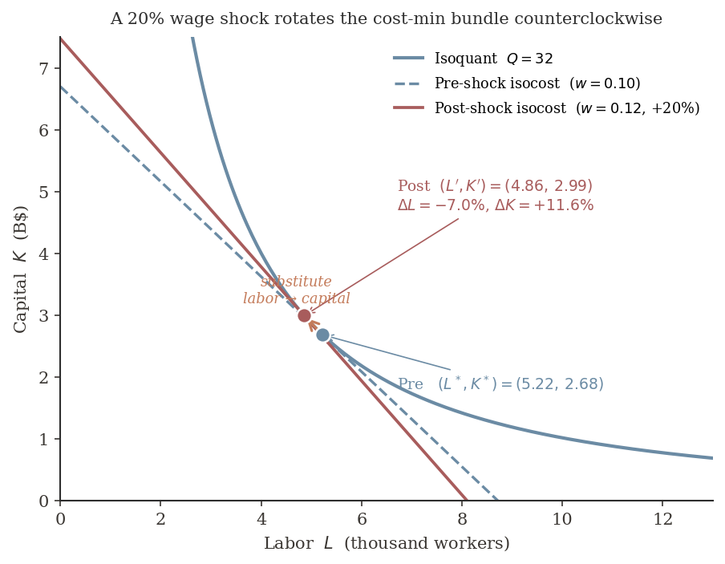
Why a wage hike? — back to the UAW spillover
Dec 2023: UAW won 25% raises at Ford / GM / Stellantis. Tesla Gigafactory (non-union) raised pay ~10% in weeks to retain workers — fully-loaded labor cost jumped \$50 → \$60/hr, about +20%. Output target stays at q = 32 GWh. How does the firm re-mix \(K, L\), and how much does cost rise?
Closed form (CRS Cobb-Douglas) FYI
\( L^* \propto w^{-\alpha} \quad K^* \propto w^{\beta} \quad c^* \propto w^{\beta}\)
\(\propto\) reads “is proportional to”. Holding \(q, r, A\) fixed, these are the only \(w\) terms; the constants out front cancel in any percentage change, so an \(=\) would be wrong. The exponent is the elasticity: \(\%\Delta L^*/\%\Delta w = -\alpha\), and \(\%\Delta K^*/\%\Delta w = \%\Delta c^*/\%\Delta w = \beta\).
−7%
\(\Delta L^*\)
(1.2−0.4−1)
+11.6%
\(\Delta K^*\)
(1.20.6−1)
+11.6%
\(\Delta c^*\)
(1.20.6−1)
Wage rose 20%; cost rose only 11.6%. The firm absorbs only the labor-share-weighted portion of the shock.
A 20% jump is a discrete change, so use \((w'/w)^{\text{exponent}} - 1\), not \(-\alpha \times 20\%\) — that is why \(\Delta L^*\) is \(-7.0\%\) rather than \(-8\%\).
Walkthrough 8.2 — Tesla Nevada Wage Shock
Problem & Set up. From W8.1's optimum \((K^*, L^*, c^*) = (2.679,\,5.224,\,0.8707)\), the UAW spillover pushes \(w = 0.10 \to w' = 0.12\) (+20%). \(r = 0.13\) and \(q = 32\) unchanged. Find the new \((K', L', c')\) and verify the closed-form elasticities.
Solve — new optimum
-
Step 1. Tangency gives a ratio (not \(K'\) directly):
\(\dfrac{K'}{L'} = \dfrac{\alpha\,w'}{\beta\,r} = \dfrac{0.4 \cdot 0.12}{0.6 \cdot 0.13} = \mathbf{0.6154}\)
⇒ \(\;K' = 0.6154\,L'\) (plug this into the isoquant) -
Step 2. Substitute \(K' = 0.6154\,L'\) into \(Q = 8 K'^{0.4} L'^{0.6} = 32\):
\(8 \cdot (0.6154\,L')^{0.4} \cdot L'^{0.6} = 32\)
\(8 \cdot 0.6154^{0.4} \cdot \underbrace{L'^{0.4} \cdot L'^{0.6}}_{=\,L'^{\,1}\,=\,L'} = 32\)
\(8 \cdot 0.8236 \cdot L' = 32 \;\Rightarrow\; 6.589 \cdot L' = 32\) -
Step 3. \(L' = 32 / 6.589 = \mathbf{4.857}\) (was 5.224)
\(K' = 0.6154 \cdot 4.857 = \mathbf{2.989}\) (was 2.679)
Solve — new cost + check
- Step 4. \(c' = 0.12 \cdot 4.857 + 0.13 \cdot 2.989 = \mathbf{0.9714}\) B\$/yr
- Check. \(\Delta L^* = -7.0\%\), \(\Delta K^* = +11.6\%\), \(\Delta c^* = +11.6\%\)
- Match closed-form. FYI Elasticity \(\%\Delta L^*/\%\Delta w = -\alpha = -0.4\) ⇒ \(1.2^{-0.4}-1 = -7.0\%\) ✓; \(\%\Delta c^*/\%\Delta w = \beta = 0.6\) ⇒ \(1.2^{0.6}-1 = +11.6\%\) ✓
Takeaway. 20% wage shock ⇒ 7% fewer workers, 11.6% more capital, total cost up only 11.6%. The firm absorbs the labor-share-weighted portion of the shock. A TSMC fab (labor share 17%, not 60%) would see cost rise only \(\sim 3.4\%\) — capital intensity insulates against wage shocks.
Application — Amazon Warehouses 2020–2025
The same algebra as Walkthrough 8.2, playing out at scale across the US warehouse industry. Both \(w\) is rising AND robotic-capital \(r\) is falling — the substitution is much sharper than the gigafactory's.
+47%
Starting wage 2020→2025 (\$15→\$22+/hr at coastal hubs)
1M
Robots deployed by Q3 2025 (vs ~1.5M human warehouse workers)
−35%
Sparrow picker unit cost since 2018 (\(r\) is falling)
\$32B
Q2 2025 capex (2× from two years earlier)
SHV1 Shreveport, LA
Amazon's newest-generation fulfillment center integrates Sequoia (inventory) + Sparrow (robotic-arm picker). Operates with 25% fewer workers than legacy facilities at the same throughput.
The textbook prediction
Cobb-Douglas: \(K^*/L^* \propto w/r\). When \(w/r\) doubles, the cost-min \(K/L\) ratio doubles. Amazon's actual K/L ratio roughly doubled 2020–2025 — exactly the comparative-statics prediction.
Same algebra, sharper substitution. The gigafactory absorbed a 20% wage shock with an 11.6% cost increase because labor is 60% of cost. Amazon faces a much steeper move because robotic capital is now both cheap and close-substitute to warehouse labor — so the substitution effect is large.
Amazon Warehouses — Old vs New Technology
Watch the input mix shift in real time: L-heavy manual picking (left) ⇒ K-heavy robotic automation (right).
Old — Manual Picking
Workers walk miles per shift, pull items off shelves.
Labor-intensive — high \(L\), low \(K\).
New — Robotic Automation
Sparrow + Sequoia bring inventory to a stationary station.
Capital-intensive — high \(K\), low \(L\).
Press ↑ to return to the application slide. The textbook prediction \(K^*/L^* \propto w/r\) is what you’re watching happen.
§8.5 Marginal & Average Cost
the envelope theorem · \(\mu = MC\) · the AC–MC relationship
Before the Cost Curves — Where Sam Gets the Numbers
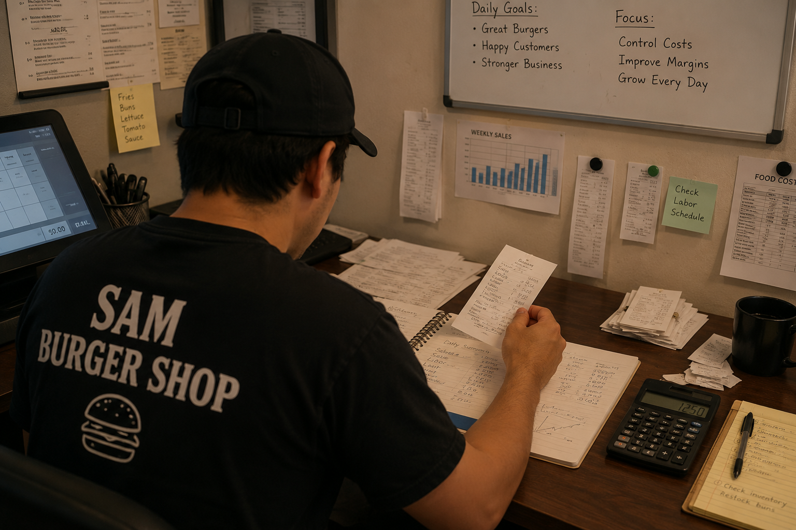
Closing the books — bank statements, supplier receipts, the labor schedule, and the POS report.
A cost curve doesn’t come from nowhere. Before Sam can draw one he has to go get the numbers — and every column of the table on the next slide traces back to a specific piece of paper.
Time clock
who clocked in & out, × hours
Wages
the labor bill \(\rightarrow wL\)
Bank stmt. + receipts
buns, patties, cheese, potatoes
Materials
scales with how much he cooks
Lease + equipment
storefront, grill, fryer
Rent
capital & land \(\rightarrow rK\)
POS report
tickets rung up that week
Burgers sold \(= Q\)
the output side of the table
That’s the whole table. Wages + Materials move with output ⇒ variable cost. Rent is owed whether Sam sells 0 burgers or 500 ⇒ fixed cost. The POS gives \(Q\). Sort the shoebox of receipts into those three bins, line them up by how many workers were on, and you have the next slide.
Burger Shop Full Inputs & Outputs Table
| Inputs | Outputs | |||||
| L | Wages | Materials | Rent | TP | \(AP_L\) | \(MP_L\) |
| 0 | \$0 | \$0 | \$26 | 0 | — | — |
| 1 | \$15 | \$2 | \$26 | 20 | 20.0 | 20 |
| 2 | \$30 | \$5 | \$26 | 50 | 25.0 | 30 |
| 3 | \$45 | \$9 | \$26 | 90 | 30.0 | 40 |
| 4 | \$60 | \$12 | \$26 | 120 | 30.0 | 30 |
| 5 | \$75 | \$14 | \$26 | 140 | 28.0 | 20 |
| 6 | \$90 | \$15 | \$26 | 120 | 20.0 | −20 |
| VC | VC | FC | Q | |||
Marginal Product & Average Product
MP = AP = 30 at L = 4 — crossing is at the AP peak.
Two identities for §8.4. (1) \(MP_L > AP_L \Rightarrow AP_L\) rising; \(MP_L = AP_L\) at the AP peak. (2) Wages + Materials = VC and Rent = FC — these labels feed straight into the cost function we're about to build.
Where this is heading. To understand marginal cost — how the firm’s total spend reshapes when output ticks up by one unit — we have to crack open the company’s books and break costs apart at every output level: how much is locked in capital \(K\) (the fixed slice: rent, equipment lease, insurance) versus how much scales with labor \(L\) (the variable slice: wages, materials, utilities). Only with that breakdown can we see what each additional unit of \(Q\) actually costs — and that’s exactly what slides 46–47 do for the burger shop.
Production Function to Costs
| Inputs | Outputs | Costs | |||||
| Labor | Wages | Materials | Rent | Q | FC | VC | TC |
| 0 | 0 | 0 | \$26 | 0 | \$26 | 0 | \$26 |
| 1 | 15 | 2 | \$26 | 20 | \$26 | 17 | \$43 |
| 2 | 30 | 5 | \$26 | 50 | \$26 | 35 | \$61 |
| 3 | 45 | 9 | \$26 | 90 | \$26 | 54 | \$80 |
| 4 | 60 | 12 | \$26 | 120 | \$26 | 72 | \$98 |
| 5 | 75 | 14 | \$26 | 140 | \$26 | 89 | \$115 |
| 6 | 90 | 15 | \$26 | 150 | \$26 | 105 | \$131 |
| 7 | 105 | 15.5 | \$26 | 155 | \$26 | 120.5 | \$147 |
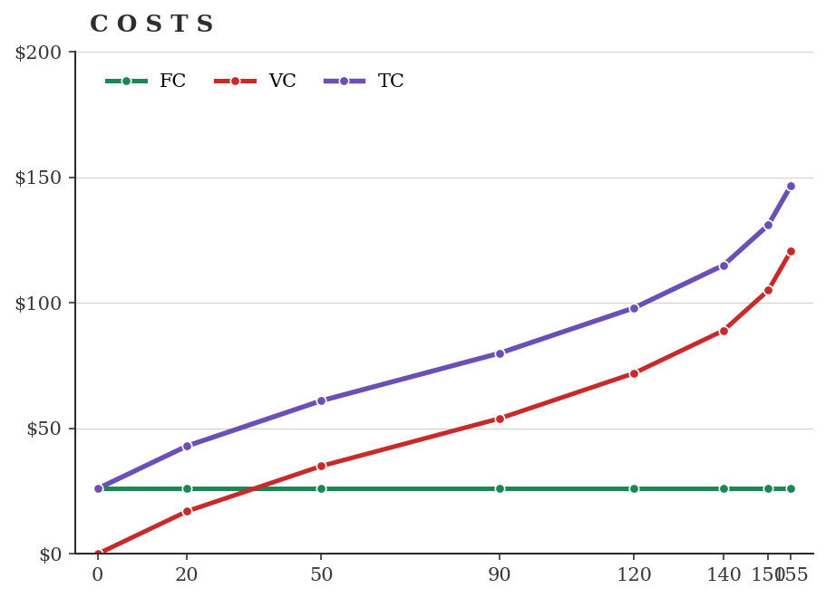
- Costs of Production: determined by the productivity of workers.
- Fixed Costs (FC): horizontal — do not vary with output.
- Variable Costs (VC): change with output; the VC curve is not constant.
- Total Cost (TC): \(TC = FC + VC\) — same shape as VC, shifted up by the amount of FC.
Costs That Matter — MC, AVC, ATC, AFC
| Outputs | Costs | MC | Averages | ||||||
| Q | FC | VC | TC | ΔTC | ΔQ | MC = ΔTC/ΔQ | AVC | ATC | AFC |
| 0 | \$26 | 0 | \$26 | — | — | — | — | — | — |
| 20 | \$26 | 17 | \$43 | \$17 | 20 | \$0.85 | \$0.85 | \$2.15 | \$1.30 |
| 50 | \$26 | 35 | \$61 | \$18 | 30 | \$0.60 | \$0.70 | \$1.22 | \$0.52 |
| 90 | \$26 | 54 | \$80 | \$19 | 40 | \$0.48 | \$0.60 | \$0.89 | \$0.29 |
| 120 | \$26 | 72 | \$98 | \$18 | 30 | \$0.60 | \$0.60 | \$0.82 | \$0.22 |
| 140 | \$26 | 89 | \$115 | \$17 | 20 | \$0.85 | \$0.64 | \$0.82 | \$0.19 |
| 150 | \$26 | 105 | \$131 | \$16 | 10 | \$1.60 | \$0.70 | \$0.87 | \$0.17 |
| 155 | \$26 | 120.5 | \$147 | \$16 | 5 | \$3.10 | \$0.78 | \$0.95 | \$0.17 |

- Marginal cost (MC): the change in total cost from producing one more unit. \(\;MC = \Delta TC / \Delta Q\). U-shape from diminishing marginal returns.
- Average variable cost (AVC): \(VC/Q\). Falls then rises (U-shape). Crosses \(MC\) at \(AVC\)'s minimum.
- Average total cost (ATC): \(TC/Q = AVC + AFC\). Also U-shaped; crosses \(MC\) at \(ATC\)'s minimum.
- Average fixed cost (AFC): \(FC/Q\). Monotonically declines — fixed cost spread over more units.
Average and Marginal Costs — Relationships
Relationships Between Average and Marginal Costs
- Since fixed costs do not change when a firm expands output, marginal cost only depends on variable cost.
\[ MC \;=\; \dfrac{\Delta TC}{\Delta Q} \;=\; \dfrac{\Delta VC}{\Delta Q} \]
What happens when marginal cost is less than average total cost?
For example, consider your overall GPA. What happens to your 3.0 average when you get a 2.5 for the semester?
⇒ It drops below 3.0.
GPA
3.0 ↓
This semester
2.5
Average and Marginal Costs — The U-Shape
Relationships Between Average and Marginal Costs
- The same holds with costs: when marginal cost is less than the average total cost, producing another unit will reduce average total cost — and vice versa.
This observation helps to determine when average total costs are minimized.
Average total costs are minimized when \(\;ATC = MC\).
MC < ATC
Each next unit costs less than the running average — ATC falls.
MC > ATC
Each next unit costs more than the running average — ATC rises.
⇒ This explains why ATC and AVC have a "U" shape: falling while \(MC\) is below them, rising once \(MC\) climbs above. They cross at the bottom of the U.
Average and Marginal Costs — Three Curves, Step by Step
AVC + MC · crossing at \(Q = 120\)

ATC + MC · crossing at \(Q = 140\)

AFC · monotonically declining
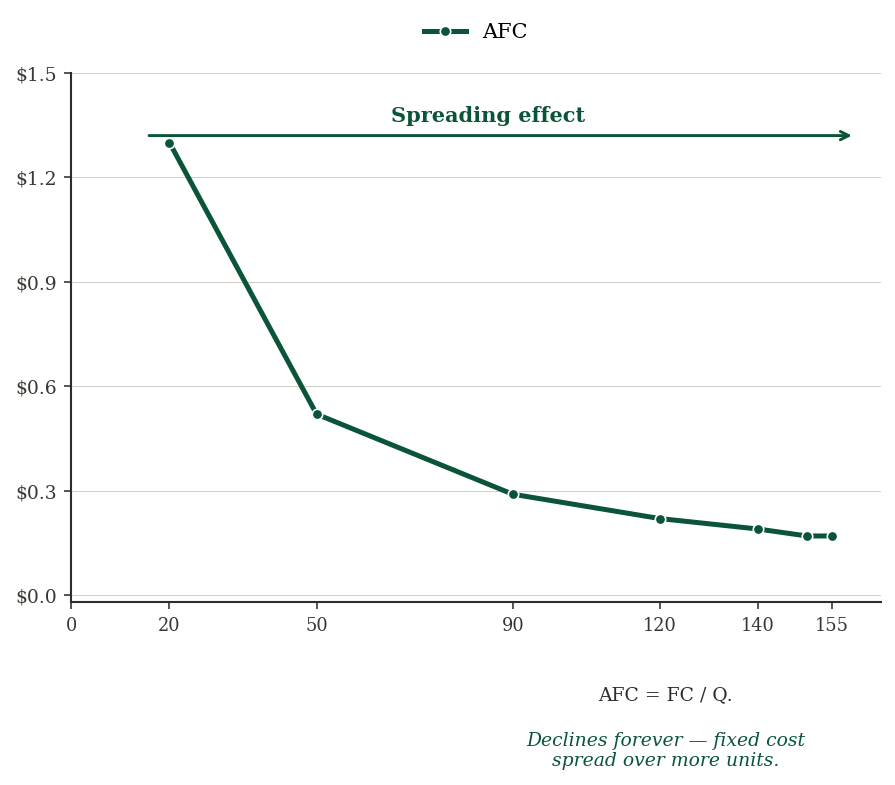
AVC is U-shaped. MC crosses AVC at its minimum.
ATC = AVC + AFC. Also U-shaped. MC crosses ATC at its minimum (further right than AVC's).
AFC = FC/Q. Monotonically declines — fixed cost spread over more units.
Average and Marginal Costs — The GPA Analogy
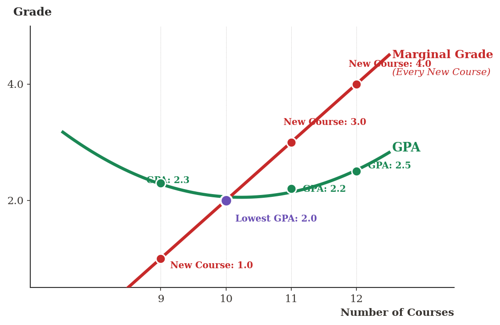
GPA ↔ Average Cost
Cumulative GPA is your average grade across all courses taken. As you take more courses, GPA reacts to each new course's grade.
New course's grade ↔ Marginal Cost
Each new course's grade is the marginal contribution. If it's below GPA, GPA falls. If above, GPA rises. They cross at GPA's minimum.
Same algebraic identity as \(MC = AC\) at \(AC\)'s minimum — just relabeled.
Marginal Cost & Average Cost
AC
—
MC
—
GAP = AC − MC
—
Definitions
\( MC = \dfrac{\partial c}{\partial q} \qquad AC = \dfrac{c}{q} \)
GPA analogy. AC is your cumulative GPA after \(q\) units; MC is the grade on the next unit. Above your GPA ⇒ GPA rises. Below ⇒ falls. They cross at the GPA minimum.
Algebra: \(\dfrac{d(c/q)}{dq} = \dfrac{MC - AC}{q}\) — so \(AC' \gtrless 0\) iff \(MC \gtrless AC\). The crossover at \(AC' = 0\) means \(MC = AC\) at \(AC\)'s minimum.
Drag the slider: the gap closes to zero exactly at \(AC\)’s minimum. CRS special case: \(c\) linear in \(q\) ⇒ \(AC = MC\) everywhere; the U-shape collapses, returning under DRS/IRS.
3D Printers and Manufacturing Cost
Modern 3D printers take Star Trek's “replicator” idea and make it real: feed plastic or metal, get a finished part. Cost structure: fixed cost for the printer + variable cost for the materials.
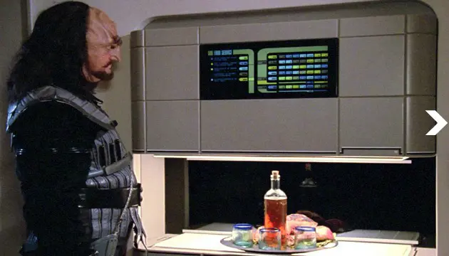
Star Trek “replicator”
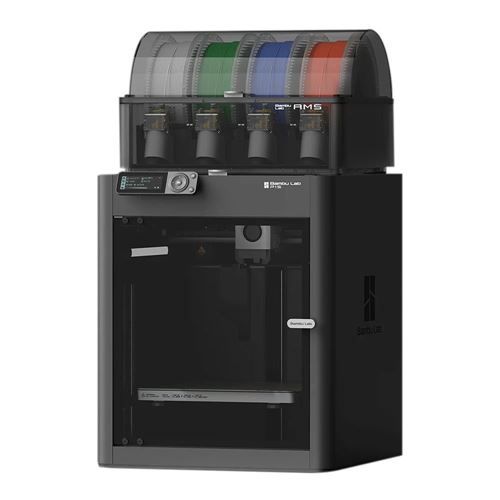
Modern 3D printer (Creality)
NOZZLE
SUNK COST
\$60
3D PRINTER
FIXED COST
\$299
FILAMENT
VARIABLE COST
\$10 / spool
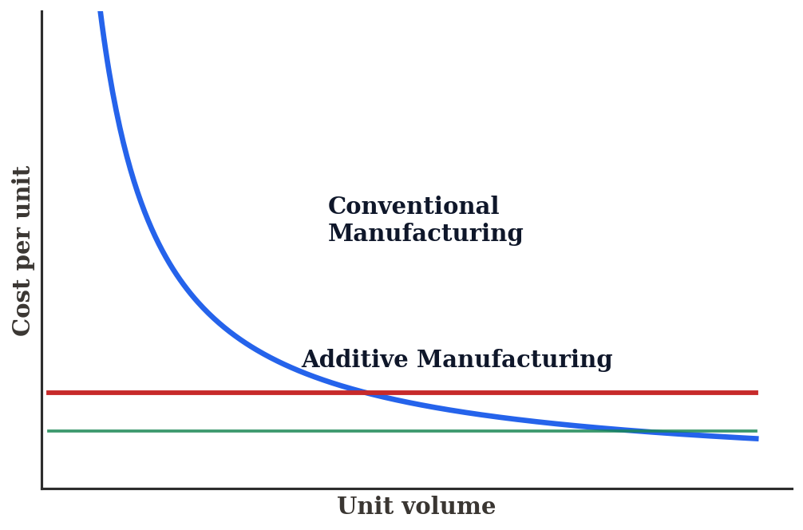
Where each wins. Conventional manufacturing has steep economies of scale — huge FC amortized over millions of units ⇒ very low AC at high volume. Additive (3D printing) has low FC but ~constant marginal cost ⇒ flat per-unit cost. Additive wins at low volumes (custom one-offs, prototypes); conventional wins at mass volume. Real-world frontier: The Economist (Aug 17, 2021) — "The rise of 3D-printed houses" — your next home could be a printout.
The Envelope Theorem — The Planner’s Problem
The setup. The gigafactory’s finance team needs to budget for next quarter. Output target rises from \(q = 32\) to \(q = 33\) GWh. What’s the cost of that extra GWh? In other words, what is \(\partial c/\partial q\)?
The hard way
When \(q\) rises by 1, both \(K^*\) and \(L^*\) re-adjust. Naïvely:
\(\dfrac{\partial c}{\partial q} = w \dfrac{\partial L^*}{\partial q} + r \dfrac{\partial K^*}{\partial q}\)
Three derivatives. Need to know how the firm re-optimizes — painful, error-prone, often impossible without re-solving the full Lagrangian.
The envelope shortcut
At the optimum, the FOCs make the two indirect adjustments cancel exactly. What’s left is just the multiplier \(\mu\):
\(\dfrac{\partial c}{\partial q} = \mu = MC\)
One identity does the work of three derivatives. Read \(\mu\) directly off the cost-min solution — no need to know how \(K^*\) or \(L^*\) move.
So what are the direct and indirect effects? — Use the Lagrangian
Start from \(\mathcal{L} = w L + r K + \mu(q - f(K, L))\). When \(q\) ticks up by 1, the total change in \(\mathcal{L}\) at the optimum is:
\(\dfrac{d\mathcal{L}^*}{dq} \;=\; \underbrace{\dfrac{\partial \mathcal{L}}{\partial q}}_{\textbf{direct}} \;+\; \underbrace{\dfrac{\partial \mathcal{L}}{\partial K}\cdot\dfrac{dK^*}{dq} \;+\; \dfrac{\partial \mathcal{L}}{\partial L}\cdot\dfrac{dL^*}{dq}}_{\textbf{indirect} \;=\; 0 \text{ by FOCs}}\)
Direct effect = \(\mu\)
\(\mathcal{L}\) depends on \(q\) only through the constraint term \(\mu(q - f)\). Hold \(K, L\) fixed and differentiate: \(\partial \mathcal{L}/\partial q = \mu\). The multiplier itself — the shadow value of one more GWh.
Indirect effects = 0
\(K^*, L^*\) do move, but the gradients they multiply — \(\partial \mathcal{L}/\partial K\) and \(\partial \mathcal{L}/\partial L\) — are zero by the FOCs. Zero × anything = zero. The K and L re-adjustments contribute nothing extra.
Net result. \(\partial c/\partial q = \text{direct effect alone} = \mu = MC\). One identity does the work of three derivatives.
Consumer-side parallel. In Ch 5, the same mechanics gave us \(\lambda = \partial v/\partial I\) = marginal utility of income. Here it gives us \(\mu = \partial c/\partial q\) = marginal cost. Same envelope, two sides of the market.
Calculus Corner — The Envelope Theorem: \(\mu = MC\)
Recall the Lagrangian \(\mathcal{L} = wL + rK + \mu(q - f)\). Differentiate the optimized cost with respect to \(q\):
\[ \frac{\partial c}{\partial q} \;=\; \underbrace{w \frac{\partial L^*}{\partial q} + r \frac{\partial K^*}{\partial q}}_{\text{indirect effects}} \;+\; \underbrace{0}_{\text{direct}} \]
Use the FOCs \(w = \mu f_L,\, r = \mu f_K\). The indirect-effects bracket becomes \(\mu(f_L \partial L^*/\partial q + f_K \partial K^*/\partial q) = \mu \cdot \partial f/\partial q = \mu \cdot 1 = \mu\):
\[ \boxed{\;\frac{\partial c}{\partial q} \;=\; \mu \;=\; MC\;} \]
The Lagrange multiplier on the output constraint is marginal cost. No coincidence — \(\mu\) is the shadow price of one extra unit of output, which is by definition marginal cost.
Same envelope mechanics as the consumer's \(\lambda = \partial v/\partial I = \) marginal utility of income (Ch 5).
Poll #1 — AC vs MC at the Gigafactory
At the gigafactory cost-min bundle, total cost \(c^* = 0.87\) B\$/yr at \(q = 32\) GWh. Under CRS Cobb-Douglas (\(\alpha + \beta = 1\)), what's the relationship between marginal cost and average cost at \(q = 32\)?
Press 1 for a 1-min timer; press ↓ for the solution.
Poll #1 — Answer: C) \(MC = AC\) everywhere
Under CRS, the cost function is linear in \(q\): \(c(q) = (w/\beta)^\beta(r/\alpha)^\alpha \cdot q / A\).
So \(MC = \partial c/\partial q\) is constant, and \(AC = c/q\) is the same constant.
Numerically: \(MC = AC = (0.10/0.6)^{0.6}(0.13/0.4)^{0.4}/8 \approx \mathbf{0.0272}\) B\$/GWh \(\approx\) \$27/MWh on average and at the margin. The U-shape returns only under DRS or IRS — or under SR with fixed capital (§8.7).
How the class voted
§8.6 Shephard's Lemma & Duality
\(\partial c/\partial w = L^*\) · the four-corner duality square
Why Shephard's Lemma & Duality? — The Analyst's Problem
The setup. You’re a Wall Street analyst covering Tesla. You can see aggregate numbers from public filings — total operating cost, capex, wage indices. You can’t see what’s inside the plant: exactly how many workers per shift, how the firm trades robots for labor when wages rise.
Observable
- Total operating cost \(c\) by quarter
- Input prices \(w\), \(r\) (BLS, BEA)
- Output \(q\) (factory delivery reports)
- Cost shape as prices move
NOT observable
- Internal \(K^*, L^*\) input choices
- The exact production function \(f(K, L)\)
- How the firm actually solved its Lagrangian
Shephard’s Lemma: if you have a model of \(c(w, r, q)\), just differentiate it:
\(\dfrac{\partial c}{\partial w} = L^*(w, r, q), \qquad \dfrac{\partial c}{\partial r} = K^*(w, r, q).\)
You recover the firm’s input choices from cost data alone — without re-solving the Lagrangian, without observing \(K\) and \(L\) directly.
The duality. The production function \(f(K, L)\) and the cost function \(c(w, r, q)\) are two equivalent descriptions of the same technology. From either one, all the empirical objects we care about — demands, marginal cost, factor shares, returns to scale — follow.
Shephard's Lemma
Apply the envelope theorem to the input-price arguments of the cost function:
\[ \frac{\partial c(w, r, q)}{\partial w} \;=\; L^*(w, r, q), \qquad \frac{\partial c(w, r, q)}{\partial r} \;=\; K^*(w, r, q). \]
Yes — this assumes the firm is already cost-minimizing. Every object here is an optimized one: \(c(w,r,q)\) is the minimized cost, and \(L^*, K^*\) are the conditional input demands — the cheapest way to hit \(q\). The proof below replaces \(w\) by \(\mu f_L\) and \(r\) by \(\mu f_K\), which are the first-order conditions, so the identity holds only at the optimum. For a firm sitting off its cost-min bundle — like the installed \((K,L) = (4,4)\) gigafactory — \(\partial c/\partial w \neq L\).
Two-line proof. Differentiate \(c = wL^* + rK^*\) w.r.t. \(w\):
\[ \frac{\partial c}{\partial w} \;=\; L^* \;+\; \underbrace{w \frac{\partial L^*}{\partial w} + r \frac{\partial K^*}{\partial w}}_{= \, \mu \left(f_L \partial L^*/\partial w + f_K \partial K^*/\partial w\right) \,=\, \mu \cdot 0 \,=\, 0} \]
Two facts kill the cross-terms. (i) Optimality: the FOCs give \(w = \mu f_L\) and \(r = \mu f_K\), which is how \(\mu\) gets factored out. (ii) The constraint: \(f = q\) holds at every \(w\), so differentiating it gives \(f_L \partial L^*/\partial w + f_K \partial K^*/\partial w = 0\). What's left is \(L^*\). \(\blacksquare\)
The empirical reach is enormous. From a fitted cost function, you can recover input demands by simple differentiation — no need to re-solve the Lagrangian.
How it all fits together — the duality map
The Ch 6 consumer map and the Ch 8 producer map, drawn as one picture — same arrows, same foundation.
![Duality map. A banner across the top states that both rows are one problem read two ways: minimize spending subject to hitting a target - the consumer minimizes p times x subject to utility equal to u-bar, the producer minimizes wL plus rK subject to f(K,L) equal to q. The upper row is the consumer, Chapter 6: the utility function u, a primitive describing preferences, leads by expenditure minimization to the expenditure function e(p, u-bar), the minimum spending needed to reach u-bar, which leads by Shephard's lemma - h equals the derivative of e with respect to price - to Hicksian compensated demand. The lower row is the producer, Chapter 8, and runs exactly parallel: the production function f(K,L), a primitive describing technology, leads by cost minimization to the cost function c(w,r,q), the minimum spending needed to make q, which leads by Shephard's lemma - L-star equals the derivative of c with respect to the wage - to the conditional input demands K-star and L-star. A dashed arrow runs back from the cost function to the production function, showing that c recovers f: they describe the same firm two ways. A banner across the bottom identifies the envelope theorem as the single result behind both Shephard arrows and behind the identity that the derivative of cost with respect to output equals mu equals marginal cost.](figures/fig-duality.png)
Only two things are primitive: \(u\) and \(f\). Every other box is recovered by solving a minimization and then differentiating — which is why the consumer and producer halves of this course are one theory, not two.
§8.7 Short Run vs Long Run
SR cost curves · LR envelope · the headline figure
Short Run vs Long Run — Definitions
Short run
Capital fixed at \(\bar K\); only labor adjusts. One-dimensional problem — the output constraint pins \(L\) uniquely.
\(c_{SR}(q; \bar K) = r \bar K + w \cdot L^*_{SR}(q; \bar K)\)
No Lagrangian, no tangency — just invert \(f(\bar K, L) = q\) for \(L\).
Long run
Both \(K\) and \(L\) adjust freely. Two-dimensional problem — Lagrangian + tangency, as in §8.3-8.4.
\(c_{LR}(q) = \min_{\bar K} c_{SR}(q; \bar K)\)
The lower envelope of the SR family — today's headline figure.
HeadsUp: short run isn't clock time. SR and LR are defined by which inputs are flexible, not by elapsed time. A semiconductor fab's short run can last five years (clean-room construction is glacial). A restaurant's short run is the lunch shift (table count fixed within the hour). A battery plant's short run is roughly a quarter (capital sunk; workforce adjustable). The institutional content is what's flexible, not how long.
Short-Run and Long-Run Cost Curves — SpaceX Raptor
We now analyze how the time horizon affects the cost structure facing a firm.
- Remember — in the short run, the amount of capital is fixed.
Short-Run Production and Total Cost Curves
SpaceX builds Raptor engines for Starship at its McGregor, TX factory. Within a quarter, the high-bay floor space, CNC machining centers, test stands, and dedicated supply-chain capex are fixed. The firm can adjust only one input fast: headcount — engineers and assembly technicians.
- A firm's short-run total cost curve describes the total cost of producing various quantities of output when capital is fixed.
- Consider the production of Raptor rocket engines.
SpaceX Raptor — capital + labor produce rocket engines (quantities per week).
Short-Run and Long-Run Cost Curves — Capital + Labor → Engines
Capital and labor are used to produce engines (quantities per week). \(\bar K = 6\) is the SR capital stock.
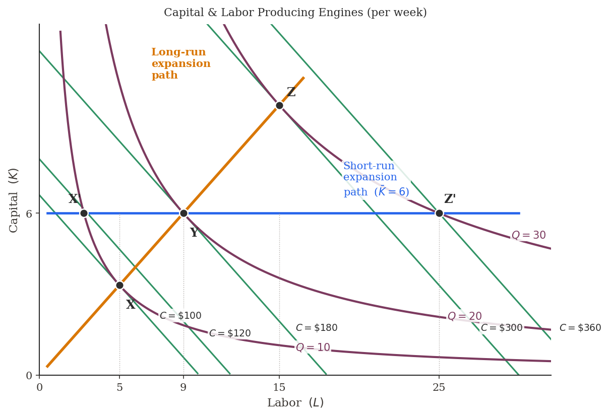
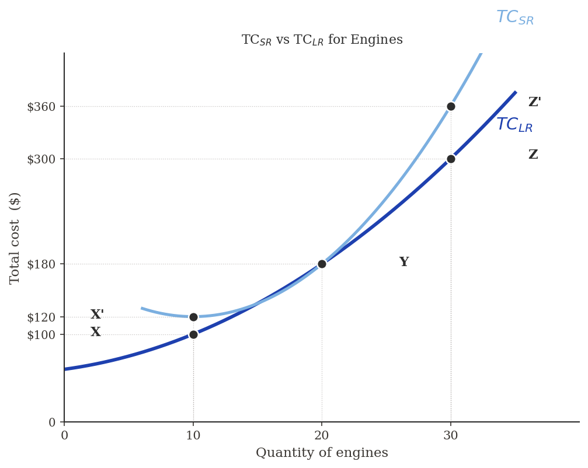
- Isoquants \(Q = 10, 20, 30\) and isocost lines (slope \(-w/r\)).
- LR expansion path (yellow) threads tangencies X, Y, Z.
- SR expansion path (blue) is horizontal at \(\bar K = 6\); SR points X', Z' use the wrong \(K\).
- Right panel: same outputs on TC. Y is the only \(Q\) where SR = LR cost; elsewhere SR sits above LR.
Short-Run vs Long-Run Average Total Cost Curves
The previous figure showed that the short-run total cost curve will never fall below the long-run total cost curve.
- This further implies that the short-run average total cost curve will never fall below the long-run average total cost curve.
- This fact holds true for all short-run average total cost curves — each one corresponds to a different fixed capital level.
The long-run ATC curve envelops every short-run ATC curve from below.
Same algebra as TC: divide each by \(Q\). \(TC_{SR}\ge TC_{LR} \Rightarrow ATC_{SR}\ge ATC_{LR}\).
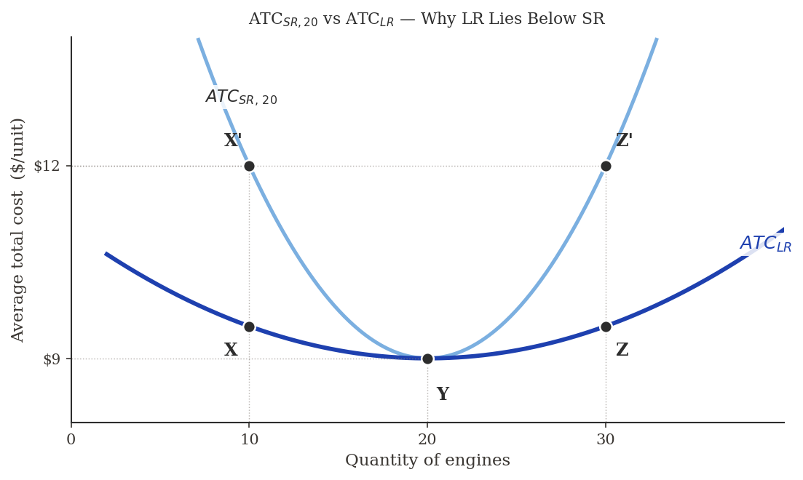
The LR-ATC Curve Envelops the SR-ATC Curves
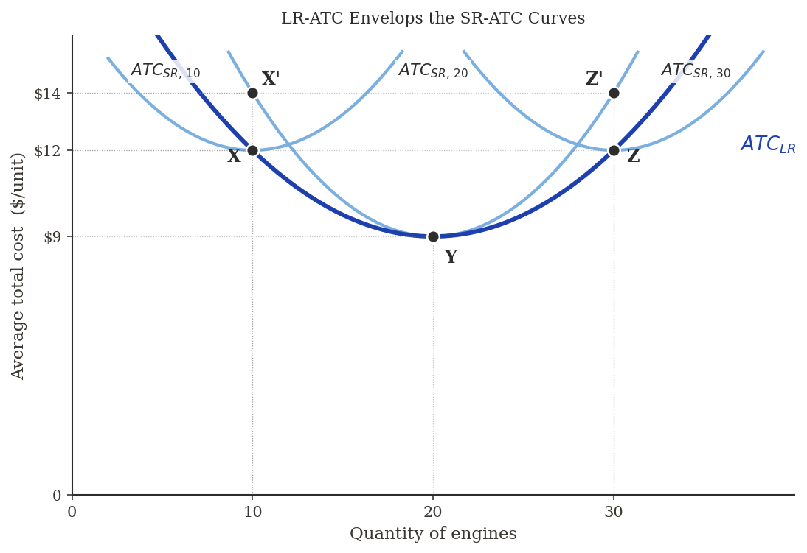
Reading the figure. Three SR-ATC curves, one for each fixed \(\bar K\). The LR-ATC sits below all of them, tangent to each at the \(Q\) where that \(\bar K\) is LR-optimal. Y (\(Q = 20\)) is the minimum of the LR envelope at \$9. X' and Z' are sub-optimal SR points where the firm is stuck with the wrong \(\bar K\) for the demand.
Short-Run vs Long-Run Marginal Cost Curves
Just as with average costs:
- Short-run marginal cost is the cost of producing an additional unit of output when capital is fixed.
- Long-run marginal cost is the cost of producing an additional unit of output when both capital and labor are variable.
What does this imply for the shape of the marginal cost curves?
In general, the long-run marginal cost curve will be flatter than the short-run marginal cost curve.
Intuition: in the SR, the firm absorbs all extra output by adding labor to a fixed \(\bar K\) — diminishing \(MP_L\) makes the next unit increasingly expensive. In the LR, the firm can also scale capital up, so MC rises more gently.
Long-Run and Short-Run Marginal Costs
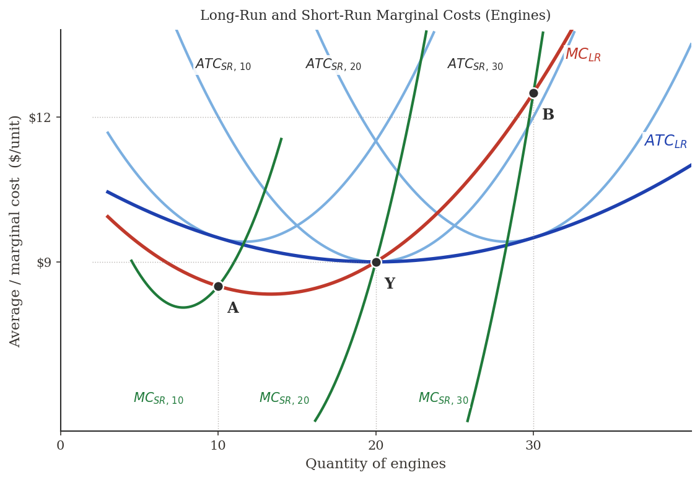
Each \(\bar K\) gives a SR-MC that crosses MCLR at its planning quantity.
Optimal cost — on the lowest ATC curve (\(ATC_{LR}\)):
- X at \((10,\,\$9.5)\), Y at \((20,\,\$9)\), Z at \((30,\,\$9.5)\) — LR-ATC values at the three planning \(Q\).
Marginal cost — on MCLR:
- A at \((10,\,\$8.5)\) — MCLR below ATCLR (ATC falling).
- B at \((30,\,\$12.5)\) — MCLR above ATCLR (ATC rising).
SR-MC curves are steeper than MCLR — diminishing \(MP_L\) bites once \(\bar K\) is fixed.
Short-Run and Long-Run Cost Curves — Economies of Scale
What happens to the long-run \(ATC\) curve as a firm grows?
- The answer reveals information about economies in the production process.
- Similar to returns to scale — but focused on the cost side.
Economies of Scale: costs rise more slowly than production.
Constant Economies of Scale: costs rise at the same rate as output.
Diseconomies of Scale: costs rise more quickly than production.
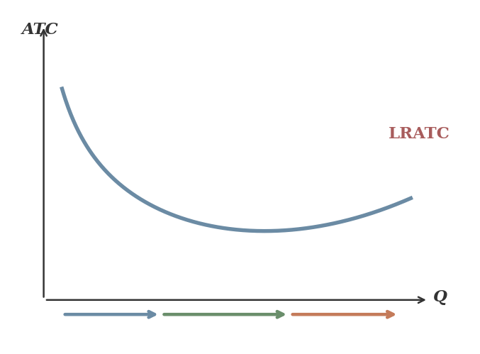
The U-Shape Implication — Not the Same as Returns to Scale
Given these relationships, what does the common “U-shape” of the long-run \(ATC\) curve imply for production?
- At first, average cost per unit falls (economies of scale). Eventually, as output rises considerably, diseconomies of scale take hold.
What factors might cause diseconomies of scale to set in?
- Overcrowding, overutilization of capital, organizational complexity, …
Not the same as returns to scale!
- Returns to scale describes how production changes when all inputs are changed by a common factor.
- Economies of scale does not impose this “common factor” rule on input proportions — the firm picks the cheapest mix at each \(Q\).
Walkthrough 8.5 — SR Cost-Curve Construction at \(\bar K = 4\)
Problem. Capital fixed at \(\bar K = 4\) B\$. Compute SR cost at \(q = 16, 32, 48, 64\) GWh; find SAC and SMC; identify the output where \(STC = LRC\).
Set up — deriving \(L^*_{SR}\) from the production function
Production: \(Q = 8\,K^{0.4}\,L^{0.6}\). In the SR, \(K = \bar K = 4\) is fixed, so the firm picks \(L\) to hit \(q\):
\(\;q = 8 \cdot 4^{0.4} \cdot L^{0.6} \;=\; \underbrace{8 \cdot 1.741}_{= 13.93} \cdot L^{0.6}\)
Solve for L: \(L^{0.6} = q/13.93 \;\Rightarrow\; \boxed{L^*_{SR}(q;\,4) = (q/13.93)^{1/0.6} = (q/13.93)^{1.667}}\)
Cost: \(STC = w\,L^*_{SR} + r\bar K = 0.10\,L^*_{SR} + \underbrace{0.13 \cdot 4}_{= 0.52}\)
\(\;SAC = STC/q\), \(SMC = \dfrac{0.1 \cdot 1.667}{13.93}\,(q/13.93)^{0.667}\)
SR−LR Tangency
\(\bar K = K^*_{LR}(q) = 0.0837\,q\)
Setting \(\bar K = 4\) ⇒ \(\;\boxed{q = 47.79 \text{ GWh}}\)
\(STC(47.79;\,4) = LRC(47.79) = 1.300\) ✓
Solve
| \(q\) | \(L^*_{SR}\) | \(STC\) | \(SAC\) | \(SMC\) | \(LRC\) |
|---|---|---|---|---|---|
| 16 | 1.260 | 0.646 | 0.04037 | 0.01312 | 0.435 |
| 32 | 4.000 | 0.920 | 0.02875 | 0.02083 | 0.871 |
| 48 | 7.862 | 1.306 | 0.02721 | 0.02730 | 1.306 |
| 64 | 12.70 | 1.790 | 0.02797 | 0.03307 | 1.741 |
\(LRC(q) = 0.02721\,q\). Green row near tangency (\(q \approx 48\)); orange row is firm’s current target \(q = 32\).
Check. At \(q = 32\): \(STC = 0.920 > LRC = 0.871\). Gap = \$49M/yr — identical to the installed-bundle wedge from W8.1.
Takeaway. At the firm’s installed \(\bar K = 4\), SR cost lies above LR cost everywhere except at \(q = 47.79\) GWh — the unique output where \(\bar K = 4\) is LR-optimal. The wedge closes over time as old capital depreciates and \(\bar K\) converges to the LR optimum (\(K^* \approx 2.68\) at \(q = 32\)).
Walkthrough 8.5 — Reading the SR vs LR Cost Picture
![Walkthrough 8.5 explanation figure. The horizontal axis is quantity of batteries q in GWh/yr (ticks at 0, 16, 32, 48, 64). The vertical axis is total cost in billion dollars per year. A dark-blue straight line from the origin is the LR envelope LRC(q) = 0.02721·q. A light-blue convex curve is the SR cost STC(q; K-bar=4); it starts at the fixed-cost intercept r·K-bar = 0.52 at q=0 and rises convexly. Four black dots mark the W8.5 table points on the SR curve at (16, $0.65B), (32, $0.92B), (48, $1.31B), and (64, $1.79B). A red dot at (47.79, $1.30B) marks the SR-LR tangency where STC = LRC. An orange vertical segment at q=32 connects the LR point ($0.87B) to the SR point ($0.92B), annotated as the $49M/yr SR-LR wedge — the gap at the firm's current target output.](figures/fig-engines-w85-stc-kbar4.png)
Reading the figure. The SR curve at \(\bar K = 4\) starts at fixed cost \(r\bar K = \$0.52\)B and rises convexly. The four W8.5 table points sit on this curve. The SR curve kisses the LR line at \(q = 47.79\) GWh — the unique output where \(\bar K = 4\) is LR-optimal. At the firm’s current target \(q = 32\), the SR curve sits \$0.049B = \$49M/yr above LR — identical to the installed-bundle wedge from W8.1.
Application — Are Rooftop Solar Panels Driving Up Electricity Costs?
- Installed US residential solar capacity grew ≈ 1,700% through 2022.
- Solar-panel costs fell sharply, helped by federal/state subsidies.
- It’s a rapidly growing form of consumer electricity supply.
- Economies of scale favor commercial solar farms over residential rooftops.
- MIT experts: residential solar costs are almost 2× commercial solar per kWh.
- California’s regulated electricity prices encourage rooftop solar adoption.
- More rooftop panels ⇒ higher electricity prices for remaining ratepayers.
- This feedback explains two-thirds of CA’s residential price rise over 13 years.
Lesson: be cautious of decentralizing production when economies of scale exist.
Economies of Scope
Economies of Scope
The simultaneous production of multiple products comes at a lower cost than if a firm made each product separately and added up the costs.
Why might a firm observe economies of scope?
- Flexible inputs or production processes
- Oil refineries produce many petroleum products simultaneously via distillation — a single barrel yields gasoline, diesel, jet fuel, LPG, and more at a much lower aggregate cost than producing each separately.
- Expertise translatable across products / services
- For instance, life and auto insurance — same actuarial and claims-handling know-how.
Products from one barrel of crude oil (gallons, 2011)
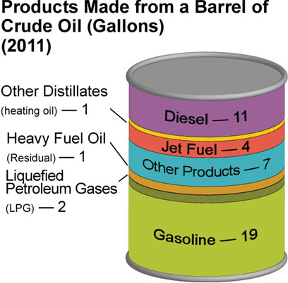
Economies of Scope — Apple’s iPhone Lineup
When producing multiple products lowers costs due to interdependent production processes (e.g., shared marketing, R&D, supply chain, and components).
Three product tiers, shared product architecture
RAM / Storage / Chip share
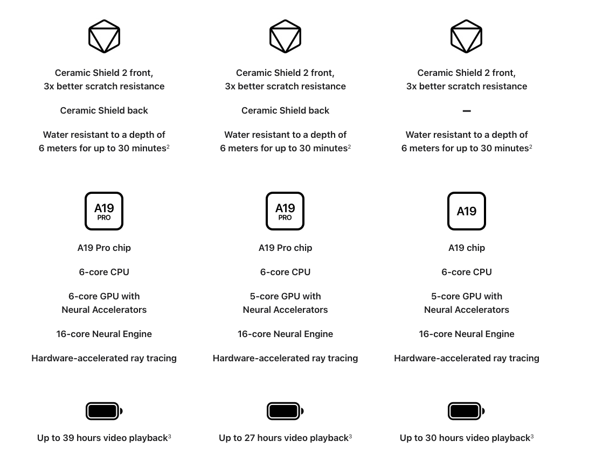
Economies of Scope — Quantifying the Saving
Good 1 = iPhone 17 Pro Max · Good 2 = iPhone 17
Where:
- \(TC(Q_1, 0)\) — total cost for a firm to produce only Good 1.
- \(TC(0, Q_2)\) — total cost for a firm to produce only Good 2.
- \(TC(Q_1, Q_2)\) — total cost for a single firm to produce both.
iPhone 17 example (annual):
- \(TC(Q_1, 0) = \$90\text{B}\) (Pro Max only)
- \(TC(0, Q_2) = \$70\text{B}\) (iPhone 17 only)
- \(TC(Q_1, Q_2) = \$125\text{B}\) (joint)
SCOPE \(= 0.28 > 0\) ⇒ Apple gains strong economies of scope. Producing both phones together saves 28% versus two specialist firms producing them separately.
Application — Airlines 2022-2024: Living in the Short Run
Post-pandemic 2022 saw US air travel rebound far faster than airlines could expand. Boeing and Airbus delivery backlogs multi-year.
Stuck with the pandemic-trough fleet \(\bar K\), airlines pushed labor hard. Delta and United both reported labor-cost-per-ASM up 15-20% from 2019 — the SR cost curve at the wrong \(\bar K\) sat well above the LR envelope.
Long-run adjustment in motion. American Airlines ordered 200 new aircraft for 2025-2030 delivery — the largest single-airline order since 2014. This shifts \(\bar K\) upward, moving onto a different SR cost curve whose tangency with LR is at higher output.
The SR-LR gap, made concrete
ASM = available seat-mile, the industry’s unit of output. CASM = cost per ASM — i.e. average cost.
Source: Delta FY2022 results. IATA cost benchmarking shows pilot & crew cost as a steeply convex function of capacity utilization — a real-data signature of the SR–LR wedge.
§8.8 Cost Minimization in Real Data
BLS cost shares · Hsieh-Klenow misallocation · rising US markups
De Loecker, Eeckhout & Unger (2020) — Rising US Markups
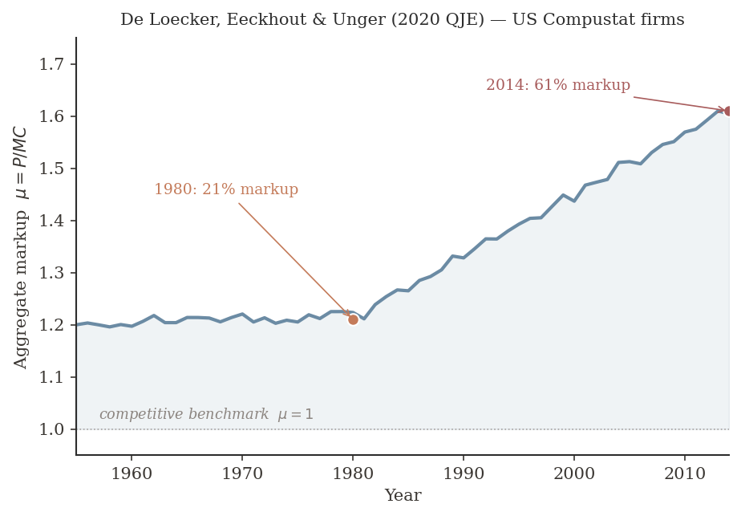
The cost-min FOC \(w = \mu \cdot MP_L\) rearranges to:
\( \dfrac{wL}{pQ} \;=\; \dfrac{\mu}{p} \cdot \beta \;=\; \dfrac{\beta}{\text{markup}} \)
Holding \(\beta\) fixed, a falling labor share of revenue must come from a rising markup.
DEU 2020 QJE: US Compustat aggregate markup rose from 21% (1980) to 61% (2014) above marginal cost.
Methodology: De Loecker & Warzynski (2012 AER) directly inverted the cost-min FOC — the same FOC we wrote on slide 10. Empirical IO uses this chapter's machinery verbatim.
Historical Note — Ronald Shephard (1912-1982)
Ronald William Shephard, American mathematical economist. Born Wichita, Kansas; PhD in mathematics, Princeton 1940.
World War II at the RAND Project (precursor to RAND Corp.), applying operations research to military logistics — a problem domain dense with cost-minimization structure.
1953-1976: Professor of Operations Research at UC Berkeley. Fellow of the Econometric Society, 1968.
The 1953 monograph
Cost and Production Functions, Princeton Mathematical Notes (1953). Theorem 6 is what we now call Shephard's lemma.
Written, by Shephard's own admission, "in self-defense" — he kept finding economists confusing the algebraic relationship between \(c\) and \(f\). The proof uses the support-function approach from convex analysis — a generation ahead of the rest of the field.
Mainstream economics took ~20 years to absorb it. By the mid-1970s "Shephard's lemma" was a textbook term. No Nobel — but every empirical-IO paper of the last 50 years uses his identity.
FYI — Where Does \(r\) Come From?
the cost of capital · who can actually raise the money · a fairness question
The Rental Rate \(r\) Is Really an Interest Rate FYI
All chapter we wrote \(TC = wL + rK\) and took \(r\) as handed down by the market (\(r = 0.13\)/yr at the gigafactory). But what is \(r\)? Tie up \$1 in a machine and you give up what that dollar would have earned elsewhere. That forgone return is the cost of capital.
What sits inside \(r\)
The interest rate — what the money could earn instead — plus depreciation, since the machine wears out. Nothing more mysterious than that.
The investment rule: keep adding capital until the return on the last unit equals the interest rate. Exactly the logic of \(MP_K/r = MP_L/w\), read one input at a time.
Why you already know what happens next
2010–2021: fed funds near 0.8% ⇒ \(r\) low ⇒ capital cheap relative to labor ⇒ the automation and AI capex wave.
2022–2024: hikes to ~5.3% ⇒ \(r\) jumps ⇒ the isocost line rotates ⇒ firms tilt back toward labor.
That is §8.2’s comparative statics — only now the shock comes from the Fed, not from a wage negotiation.
A central bank decision is, quite literally, a shock to one of the two prices in your cost-minimization problem.
So Who Sets That Rate? FYI

Panel A — the market
Savers supply funds (slopes up — higher rates reward saving). Borrowers demand them (slopes down — lower rates make more projects pay). They meet at \(i_0\).
Panel B — the firm
The firm is a price-taker in the credit market. It takes \(i_0\) as given and invests up to \(I_0\), where \(MRP_K = i_0\).
The linkage
More saving ⇒ \(S_0 \to S_1\) ⇒ rate falls to \(i_1\) ⇒ every firm slides down its \(MRP_K\) curve and invests more \((I_1)\).
This is where our \(r\) comes from. Just as the labor market handed the firm \(w\), the credit market hands it the interest rate inside \(r\). The firm is a price-taker in both — which is exactly why \(w\) and \(r\) sit in \(TC = wL + rK\) as given numbers rather than choices.
But First You Have to Get the Money FYI
Cost-minimization quietly assumes the firm can buy whatever \(K\) the tangency calls for. In practice the money has to come from somewhere — and which door is open to you depends on what kind of firm you are.
1. Bank loans — steady cash flow, real collateral
2. Bonds — borrow from many investors at once
3. Stocks / IPO — sell ownership itself
4. Venture capital — bets on unproven, fast-growing firms
5. Private equity — buy and restructure mature firms
Sam’s burger shop realistically gets door 1 — a bank loan, priced against collateral and last year’s cash flow. Doors 3–5 are effectively closed to him. Tesla and SpaceX live behind doors 3, 4 and 5.
Door 1 — Bank Loans FYI
Bank loans — borrow from one bank, repay with interest, usually pledge collateral. The most common source of outside capital for most firms.
Commercial & industrial loans — granted on credit history, business potential, and collateral.
Limitations — banks are conservative: amounts are capped, rates rise for riskier borrowers, and unproven ideas are often denied.

This is Sam’s door. A bank prices his loan off collateral and last year’s receipts — so the \(r\) he faces is set by his past, not by his prospects. That is the whole constraint in one sentence.
Door 2 — Corporate Bonds FYI
When bank borrowing is insufficient or too restrictive, firms issue bonds — IOU certificates promising to repay over time to thousands of investors at once.
Three parts: face value (par, repaid at maturity) · coupon rate (periodic fixed interest) · maturity date (months to decades, even perpetual).
Yield = coupon ÷ current price. Yield rises with risk — riskier bonds must pay more. Advantage: risk is spread across many investors. Catch: a bond is a fixed claim against the firm, and future issuance depends on its credit rating.
US firms issued over \$1.5 trillion in bonds in 2024 — the bond market is roughly twice the size of the stock market.

Bonds are still debt — fixed repayment, no ownership given up. The firm’s credit rating is what sets the yield it must offer, and that yield is the interest rate sitting inside its \(r\).
Door 3 — Stocks & IPOs FYI
Stocks sell partial ownership (equity). Shareholders are owners; an IPO is the first public sale. Market cap = the firm’s stock-market value; capital gains = price rises. Traded on NYSE / Nasdaq.
Advantages: raise big capital, no repayment obligation, limited liability.
Disadvantages: give up ownership and profits (dividends), mandatory disclosure, outside influence on management.

Equity has no coupon. Unlike debt, nothing must be repaid on a schedule — which is exactly why it funds long-horizon, uncertain projects that no bank would underwrite. Press ↓ for the largest example ever.
SpaceX Went Public — June 2026 FYI
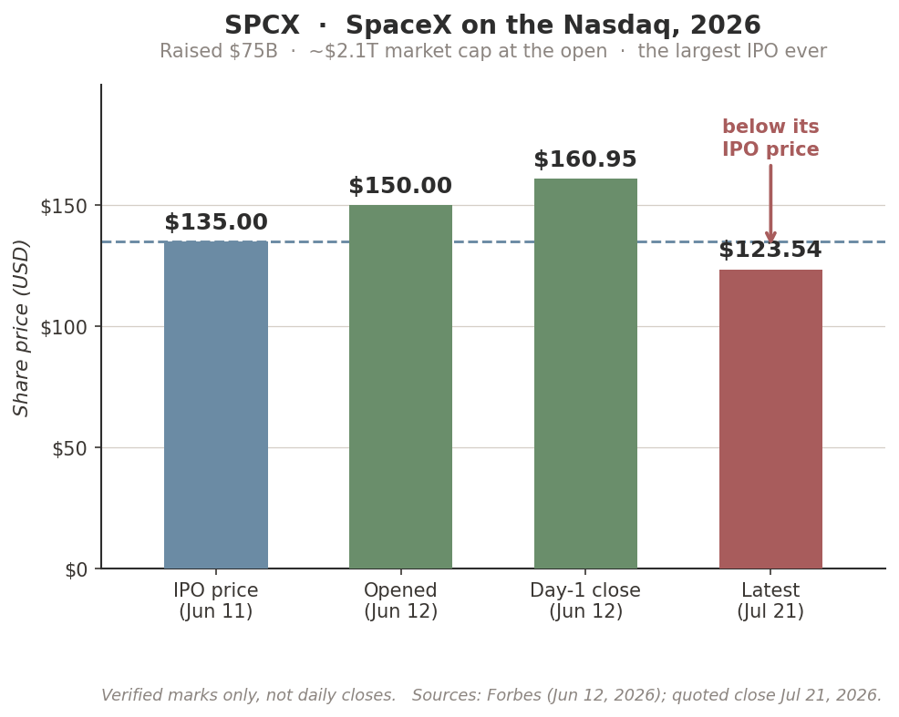
After two decades private, SpaceX listed on the Nasdaq as SPCX on 12 June 2026, raising about \$75B — the largest IPO ever, at roughly a \$2.1T market cap.
What it buys: Starship, the Starlink constellation, and Mars — capital-hungry bets with payoffs decades out.
The price of the money: quarterly disclosure and shareholder pressure — which sit awkwardly against a Mars timeline. And within six weeks the stock traded below its IPO price.
\$75B in a single morning. Sam cannot raise that in a lifetime of burger sales — and SpaceX raised it while still unprofitable in 2025. That is the access asymmetry, in one transaction.
Equity Cuts Both Ways — The Cisco Lesson FYI

Buy Cisco at the 2000 dot-com peak (~\$80) and you waited 20+ years just to break even — even though Cisco was a genuinely great company.
Holding all those years carried a huge opportunity cost — you missed the internet, social-media and mobile booms.
A great company at the wrong price is a bad investment. Now think about today’s AI valuations — and about SPCX, already under its IPO price.
When Price Detaches From Fundamentals FYI
Easy access: zero-fee, gamified apps like Robinhood brought millions of retail investors into the market.
GameStop, Jan 2021: r/WallStreetBets coordinated a short squeeze — \$17 → ~\$500 in weeks with no change in fundamentals — then a −82% crash.
Markets are risky: hype can tear price away from the value of expected future earnings. No guaranteed profit — gains for some, losses for many.
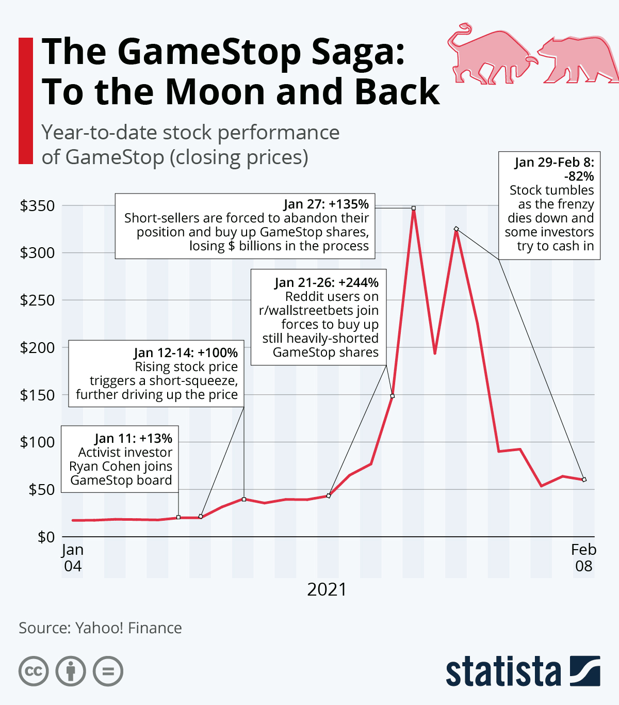
Measuring Risk — The “Fear Index” FYI

Investors gauge market risk with the VIX — the “fear index” — the volatility traders expect over the next 30 days.
Low VIX (~12–20) = calm, confident markets — and cheaper capital for firms.
High VIX = fear: it spiked near 80 in the 2008 crisis and the 2020 COVID crash. Windows for raising capital slam shut.
Door 4 — Venture Capital FYI
Venture capital — equity funding for risky start-ups with high growth potential: seed money in exchange for a share of ownership.
Staged funding: Seed → Angel → Series A → B → C → Mezzanine → IPO, with more money at each round.
Most bets fail; a few 10× winners carry the fund. OpenAI raised \$6.6B in 2024 at a \$157B valuation — with zero profit.

Why Sam cannot use this door. VC needs a plausible path to 10×. A well-run burger shop that reliably returns 12% a year is a good business and a bad VC investment — the model requires outliers, not steady earners.
Door 5 — Private Equity FYI
Private equity raises capital to buy companies that are not publicly traded — often mature firms that are struggling — takes a large stake, improves performance, and sells years later.
They may replace management and restructure. Blackstone, KKR, Apollo and Carlyle manage trillions.
Controversial: defenders say it imposes financial discipline; critics say it loads firms with debt and cuts jobs.

In our language, PE is a cost-minimization business. Buy a firm sitting above its cost curve, move it back down — and capture the difference. Whether that is discipline or asset-stripping is the live argument. Press → for the fairness question.
The Stock Market — Capital Follows the Story FYI
Sam’s Burger Shop
- Sells a real product, every day, at a real margin
- Wants a second grill and a second location
- Capital access = a bank loan, priced off collateral
- Expansion is capped by his own retained earnings
SpaceX
- Raised roughly \$12B of outside capital
- Spent most of two decades unprofitable while raising it
- 2024 net profit ~\$0.8B — against a valuation around \$350B
- That is a price of roughly 400× current earnings
The asymmetry isn’t profit — it’s access. Capital markets price expected future cash flows, so a credible story about the future can raise billions today. A bank prices Sam off collateral and last year’s receipts. Both firms may earn an honest return; only one can convert a narrative into a factory.
Brainstorm 1 — Would You Run the Real Business?
An index fund pays you 10% a year for doing nothing.
Running a real business — long hours, real risk, real output — also returns 10% a year.
1. The choice
Same 10% either way. Which would you pick — and why would anyone pick the hard one?
2. If everyone picks the fund
Suppose we all reason that way. Who produces anything? And where would the fund’s 10% come from?
3. Fair?
Is it fair that a compelling story raises billions while a profitable shop waits on a loan officer?
Think 90s · Pair 90s
Press ↓ for discussion points — there is no answer key on Q3.
Brainstorm 1 — Discussion Points
1. You would be working for free
If the business returns exactly the market rate, economic profit = 0 — the normal rate of return from §8.1. You supplied labour, bore risk, and gave up liquidity, and were paid only what the passive alternative pays. To be worth it, the business must beat the market rate — that margin is the compensation for effort and risk.
2. Everyone cannot index
The fund’s 10% is not created by the fund — it is the earnings of the real firms it holds. If nobody built or ran those firms, there would be nothing to index and no 10%. Individually rational, collectively impossible: the passive return is derived from production, so someone must produce.
3a. The case that it is fair
Capital markets price expected future cash flows, which is exactly how genuinely new things get funded — nobody can collateralize a reusable rocket. Sam’s shop is already financeable precisely because it is proven.
3b. The case that it is not
Story-driven capital also inflates bubbles (Cisco, GameStop) and starves ordinary productive firms. Access tracks narrative and networks as much as merit — and Sam’s output is real today.
Positive economics says where capital flows. Whether you like the destination is normative — and that one is yours.
Chapter Summary
Cost-min problem
\(\min wL + rK\) s.t. \(f(K, L) \geq q\). Lagrangian FOCs ⇒ tangency \(\text{MRTS}_{LK} = w/r\); equimarginal \(MP_L/w = MP_K/r\).
Cost function (Cobb-Douglas)
\(c = (\alpha+\beta)(q/A)^{1/(\alpha+\beta)}(w/\beta)^{\beta/(\alpha+\beta)}(r/\alpha)^{\alpha/(\alpha+\beta)}\). Under CRS, linear in \(q\); cost shares = production exponents.
Marginal & average cost
\(MC = \partial c/\partial q = \mu\) by envelope theorem. \(MC = AC\) at \(AC\)'s minimum. Under CRS, \(MC = AC\) everywhere.
Shephard's lemma
\(\partial c/\partial w = L^*,\; \partial c/\partial r = K^*\). Recover conditional input demands from the cost function by differentiation.
SR vs LR
SR: \(K\) fixed at \(\bar K\). LR: both adjust. LR cost = lower envelope of SR family. SR isn't a clock-time concept — it's a flexibility concept.
Duality framework
Cost function and production function are equivalent representations of the firm's technology. Same machinery as consumer expenditure ↔ Hicksian.
Gigafactory locks (Ch 7 inheritance + Ch 8 additions): \(A=8,\, \alpha=0.4,\, \beta=0.6,\, q=32\) GWh, \(w = 0.10\), \(r = 0.13\). LR cost-min: \((K^*, L^*) = (2.68, 5.22)\); \(c^* = \$0.87\) B/yr. Inherited by Ch 9.
Coming Up — Chapter 9: Profit Maximization & Firm Supply
Today we built the cost function \(c(w, r, q)\) and the conditional input demands — what the firm spends given output.
Chapter 9 asks the second producer-theory question: given the cost function and an output price \(p\), how much output to produce?
\( \max_q \;\; p \cdot q - c(w, r, q) \quad \Rightarrow \quad p = \dfrac{\partial c}{\partial q} = MC \)
The headline result \(p = MC\) is the envelope-theorem identity from today, viewed from the output-choice side:
- Supply curve: The firm's supply is inverse-\(MC\) (above min AVC) — built directly from today's cost function.
- Hotelling's lemma: Same envelope mechanics as Shephard — \(\partial \pi/\partial p = q^*\), recovers supply from profit function.
- Shutdown decision: Run iff \(p \geq \min AVC\) (the SR/LR distinction from today determines AVC).
- Tesla wage shock cont'd: Even when \(q\) endogenizes, the cost-min mix at each \(q\) is what we built today.
Before next class: read manuscript §9.1–§9.3 and try Walkthrough 9.1 on your own. Today's gigafactory cost function carries over verbatim.
Questions?
Dr. Richeng Piao · ECON 2316 · Chapter 8